이 노트는 크리스 커너 인터뷰(다이어리 오브 어 CEO, 진행 스티븐 바틀렛)에서 진행자가 상대에게서 정보를 끌어내는 질문의 기술을 장면 열 개로 쪼개 본 공부 교재입니다. 모임 대장님이 내주신 2차 복기 과제를 위해 만들었습니다. 크리스가 무슨 말을 했는지보다, 스티븐이 그 말의 어느 대목을 잡아 어떤 질문으로 이었는지를 따라갑니다.
이번에 보는 것은 다섯 가지입니다. 스티븐이 답변에서 어떤 단어를 포착하는가, 어디서 멈추고 더 깊이 파고드는가, 자기 지식과 경험을 질문에 어떻게 쓰는가, 상대 주장과 부딪히는 사례를 어떻게 꺼내는가, 하나의 답변을 어떻게 다음 질문으로 연결하는가. 질문 하나를 떼어 보지 않고 질문이 이어지는 과정 전체를 봅니다.
글의 대화 인용은 영어 원문을 한국어로 옮긴 대본에서 가져왔고, 영상 클립은 한국어 더빙판에서 해당 대목을 찾아 잘랐습니다. 따옴표나 인용 상자 안의 말은 대본에 있는 말이며 줄일 때는 줄임표를 썼습니다. 예로 시작하는 문장은 써먹는 법을 보여 주려고 제가 지어낸 예시입니다. 진행자와 게스트의 속마음은 알 수 없으므로 질문의 의도는 실제 대화로 읽어 낸 해석이라고 생각해 주세요.
대본은 영어 자동 자막을 번역한 것이고 화자 구분은 문맥으로 추정한 것이라 일부가 틀릴 수 있습니다. 더빙판은 번역 문장이 대본과 조금 다르게 들리는 곳이 있고, 광고 구간은 인용하지 않았습니다. 원본 영상은 다이어리 오브 어 CEO의 것이며 이 교재는 개인 공부용으로만 씁니다.
이 인터뷰를 한 번이라도 본 사람이 기억하는 것은 대개 크리스의 말입니다. 휴대폰 액정, 버키스, 쿠키바, RV 파크 같은 이야기입니다. 이 교재는 반대편을 봅니다. 크리스가 그 이야기를 하게 만든 스티븐의 질문입니다.
장면마다 구성이 같습니다. 직전에 크리스가 무슨 말을 했는지, 스티븐이 그 말의 어느 대목을 잡았는지, 그래서 다음 질문이 어떻게 나왔는지를 한 단계씩 따라가고, 마지막에 내가 가져다 쓸 수 있는 기술 하나를 노란 상자로 뽑았습니다.
대장님이 내주신 과제
이 교재는 대장님이 내주신 2차 복기 과제에서 출발했습니다. 대장님 말씀의 핵심은 "어떤 사업이 좋고 말고는 중요하지 않다. 사고방식 자체를 보라"는 것입니다. 그래서 크리스가 소개하는 사업 아이템이 좋은지 나쁜지는 이 교재의 관심사가 아닙니다.
1차 복기가 이 인터뷰에서 정보를 많이 얻는 일이었다면, 2차 복기는 방향이 다릅니다. 정보를 얻을 수 있는 사람이 되려면 어떤 능력이 필요한지를 보는 것입니다. 그 능력이 가장 잘 드러나는 곳이 스티븐의 질문입니다. 같은 사람을 앞에 앉혀 놓고도 어떤 질문을 하느냐에 따라 나오는 이야기의 깊이와 양이 달라집니다. 이 인터뷰는 두 시간 넘게 그 차이를 보여 줍니다.
크리스 커너는 어떤 사람인가
크리스 커너는 80개가 넘는 사업을 시작한 연쇄 창업가이고, 도입부에서 부업의 왕으로 소개됩니다. 본인 말로는 모든 사업을 합쳐 매출이 수억 달러 초반대, 이익이 수천만 달러 초반대입니다. 하지만 곧바로 실제 개수로 보면 대부분은 포기했거나 시들해졌거나 실패했다고 덧붙이고, 그냥 숫자 싸움이라고 말합니다.
출발은 아홉 살 때입니다. 빨간 슈윈 자전거를 갖고 싶었는데 부모님이 살 돈이 없었고, 골프장 맞은편 집 마당으로 날아오는 골프공을 주워 팔았습니다. 그 뒤로 대학 때 휴대폰 수리 사업, 이커머스 풀필먼트, 중고차 구매 대행, RV 파크까지 이어집니다. 진행자 스티븐 바틀렛은 이 인터뷰가 실린 팟캐스트의 진행자입니다. 앞에 놓인 가방 세 개에는 500달러, 1,000달러, 5,000달러가 들어 있고, 그 돈으로 어떤 사업을 하겠느냐는 질문이 인터뷰 중간중간 나옵니다.
다섯 가지 관찰 포인트
질문이 이어지는 과정 전체를 보기 위한 렌즈 다섯 개입니다. 장면마다 이 중 무엇이 보이는지 풀이에 적어 두었습니다.
단어 포착: 크리스는 말하다가 제로섬, 웹 아카이브, 검증, 운영자 같은 단어를 지나가듯 꺼냅니다. 스티븐이 그중 어느 단어에서 멈추는지를 봅니다.
멈추고 파고듦: 좋은 말씀이라며 넘어가지 않고 예를 들어 달라, 그게 무슨 뜻이냐고 되묻는 지점입니다. 어느 대목에서 흐름을 멈추는지를 봅니다.
기존 지식 활용: 스티븐이 자기 가설, 다른 사람에게 들은 이야기, 읽은 연구, 투자한 경험을 질문 안에 어떻게 넣는지를 봅니다.
모순 사례: 크리스의 주장과 부딪히는 사례를 어떻게 꺼내는지를 봅니다. 반박하려는 것이 아니라 그 주장이 어디까지 성립하는지 확인하는 방식으로 읽힙니다.
답변에서 다음 질문으로: 스티븐의 질문 상당수는 바로 직전 답변에서 나옵니다. 하나의 답이 다음 질문으로 이어지는 연결선을 봅니다.
이 교재는 스티븐의 속마음을 알 수 없습니다. 그래서 질문의 의도를 풀이할 때는 이렇게 보는 것이 자연스럽다, 이렇게 읽힌다는 식으로 쓰고 단정하지 않습니다.
영상은 이렇게 보세요
스티븐이 질문하기 직전, 크리스의 말이 끝나는 곳에서 영상을 멈춥니다. 클립은 일부러 그 몇 초 전부터 시작하게 잘랐습니다.
내가 스티븐이라면 무엇을 물을지 먼저 입으로 말해 봅니다. 맞히는 것이 목적이 아니라, 나는 어느 단어를 잡았는지 확인하는 것이 목적입니다.
클립을 이어 틀고 스티븐의 실제 질문과 비교합니다. 같은 단어를 잡았는지, 내가 놓친 단어가 있었는지 봅니다.
질문 하나로 끝내지 말고, 크리스가 답한 뒤 스티븐이 다시 무엇을 잡는지까지 이어서 봅니다. 한 번 더 이어지는 곳에 이 인터뷰의 기술이 있습니다.
이 교재의 지도
기획 메모의 복기 1번부터 12번을 일곱 장으로 묶었습니다.
복기 1~3 (2장): 단어의 뜻을 묻고, 주장을 경험으로 바꿔 달라고 하고, 내 생각을 질문에 넣는 장면 세 개
복기 4~6 (3장): 성공 사례에서 원리를 뽑고, 판단 기준을 끌어내고, 개념을 행동으로 바꾸는 장면 세 개
복기 7~8 (4장): 가상의 상황을 던지고, 반대 사례를 가져오는 장면 두 개
복기 9~10 (5장): 답변 속 더 근본적인 문제를 발견하고, 답에 따라 질문의 방향을 바꾸는 장면 두 개
복기 11 (6장): 인터뷰 전체가 어떤 순서로 짜여 있는지, 그리고 스티븐의 질문이 늘 중립적인지에 대한 메타분석
복기 12 (7장): 대장님을 뵐 때 나는 어떻게 질문하는가, 스스로 돌아볼 질문, 연습 문제 두 개
CHAPTER 01
복기 1~3: 단어를 잡고, 경험을 묻고, 내 생각을 내놓는다
상대의 말에서 질문의 재료를 찾는 세 가지 방법
첫 세 장면은 질문의 재료를 어디서 구하는가에 대한 이야기입니다. 재료는 둘 중 하나입니다. 상대가 방금 한 말, 아니면 내가 이미 알고 있는 것입니다. 복기 1은 상대의 말 속 단어, 복기 2는 상대의 주장, 복기 3은 내 생각을 재료로 씁니다.
복기 1. 상대방이 사용하는 단어의 의미를 파고든다
챕터 4 이미 되는 사업을 베끼기(8:57)에서 스티븐이 지금이 부업을 시작하기 가장 좋은 때냐고 묻자 크리스는 도구가 어느 때보다 많다고 답합니다. 그런데 왜 사람들은 안 하느냐는 질문에는 남의 시선, 그리고 도구와 아이디어를 연결하지 못해서라고 하고, 한마디를 덧붙입니다. 풍요의 법칙이 얼마나 현실인지도 모를 거라는 것입니다. 바로 그 뒤에 단어 하나가 나옵니다.
크리스: 사람들은 사업이 제로섬 게임이라고 생각해요. — 스티븐: 그게 무슨 뜻이죠? — 크리스: 시장이 포화됐다고 생각한다는 뜻입니다. 제품이나 서비스 아이디어가 떠오르면 엄청 신나하다가, 구글에 검색해 보고 이미 있는 걸 발견하면 접습니다. 저는 반대예요. 이미 있다는 걸 알면 좋아, 이거다 해요. 누군가 최전선에 가서 이걸 검증해 줬다는 뜻이니까요. 그러고는 웹 아카이브에 들어가고, 후이즈(whois)에서 그 사이트가 지난 10년간 어떻게 변했는지 봅니다… — 스티븐: 웹 아카이브가 뭔지, 어떻게 쓰시는지 모르는 분들을 위해 설명해 주시겠어요? — 크리스: 시간에 따라 웹사이트가 어떻게 보였는지 스냅샷을 보여주는 도구예요. 성공한 사업들을 역설계하기에 아주 좋은 방법이죠. 그리고 시밀러웹이라는 도구로는 트래픽이 시간에 따라 어땠는지를 볼 수 있어요…
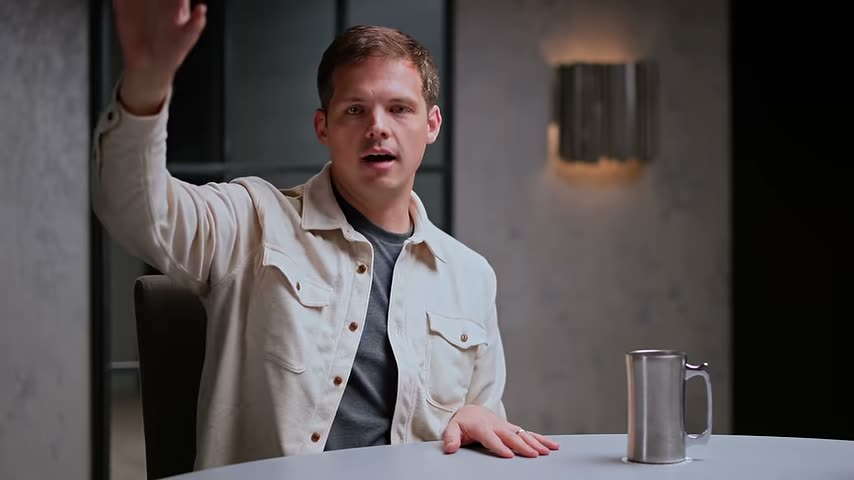
10:17 · 제로섬이 무슨 뜻이죠? → 웹 아카이브 설명1분 22초
여기서 보이는 포인트는 1번 단어 포착과 2번 멈추고 파고듦입니다. 스티븐이 잡은 단어는 제로섬 게임입니다. 크리스는 이 말을 설명 없이 던졌고 스티븐은 그 자리에서 그게 무슨 뜻이냐고 묻습니다. 제로섬이라는 말 자체를 몰랐을 가능성보다, 크리스가 이 단어를 어떤 맥락으로 쓰는지 확인하는 질문으로 보는 것이 자연스럽습니다. 같은 단어도 사람마다 쓰는 뜻이 다르기 때문입니다.
크리스의 답은 시장이 포화됐다는 뜻이고, 자신은 정반대로 이미 있으면 좋아, 이거다 하고 생각한다는 것입니다. 그런데 이 답 속에 웹 아카이브라는 도구 이름이 지나가고, 스티븐은 그것도 다시 잡습니다. 모르는 분들을 위해 설명해 달라는 말은 시청자의 자리에서 한 번 더 멈춘 질문으로 읽힙니다. 그 결과 이야기는 경쟁자를 바라보는 관점에서 경쟁사를 역설계하는 구체적인 방법으로 내려갑니다. 크리스는 웹 아카이브로 사이트의 변화를 보고 시밀러웹으로 트래픽 변화를 겹쳐 보는 방법을 설명합니다.
카피할 기술. 내가 아는 단어라고 상대도 같은 의미로 쓴다고 단정하지 않고, 상대가 그 단어를 어떤 맥락에서 쓰는지부터 확인합니다. 예: 거래처 담당자가 이번 건은 리스크가 크다고 하면, 어떤 종류의 리스크를 말씀하시는 건지 먼저 물어서 일정인지 비용인지 평판인지 상대의 기준을 확인하는 식입니다.
복기 2. 주장을 들으면 실제 경험을 요구한다
챕터 5 실험과 테스트(12:53)입니다. 직전에 크리스는 이미 되는 사업을 따라 하는 것이 부끄러울 일이 아니라고 했습니다. 스티븐은 사람들은 그게 통한다고 생각하지 않는다며 자기 쇼에서 들은 월마트 이야기를 꺼내고, 이렇게 묻습니다.
스티븐: 전략으로서의 모방이죠. 직접 해보셨나요? — 크리스: 그럼요. — 스티븐: 예를 들어주세요. — 크리스: 대학 때인 2010년에 휴대폰 수리 사업을 했어요… 그게 전구가 켜지는 순간이었어요. 대부분은 아마 네, 어디로 보내면 되죠? 했을 텐데, 저는 이 사업에 내가 들어가야겠다. 전화한 저 사람을 따라 해야겠다 했습니다. 그 사람 웹사이트가 뭔지도, 회사 이름도 몰랐어요. 그땐 웹 아카이브도 없어서 볼 수도 없었고요. 그냥 비즈니스 모델을 베끼고 싶었어요…
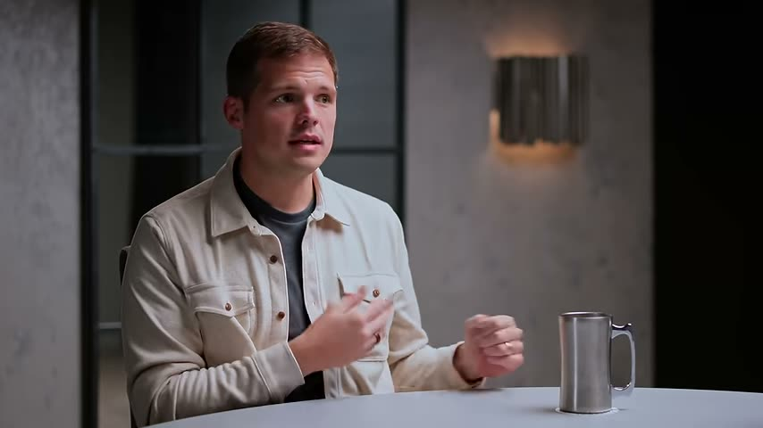
10:20 · 직접 해보셨나요? → 예를 들어주세요 → 휴대폰 수리1분 14초
이 장면에서는 2번과 3번이 겹칩니다. 스티븐은 모방 전략이라는 일반론을 자기 쇼에서 들은 월마트 이야기로 먼저 꺼냅니다. 자기가 이미 알고 있는 이야기를 질문의 출발점으로 쓴 것입니다. 그다음 질문은 짧습니다. 직접 해보셨나요? 크리스가 그럼요, 한마디로 답하자 스티븐은 거기서 만족하지 않고 예를 들어주세요 하고 한 번 더 요구합니다. 예, 아니오로 끝날 수 있던 답이 휴대폰 수리 사업과 깨진 아이폰 액정이라는 구체적인 이야기로 바뀌는 순간입니다.
순서를 정리하면 이렇습니다. 일반론을 꺼내고, 직접 해봤는지 묻고, 예를 하나 요구하고, 이야기가 끝나면 그 이야기 안에서 다음 질문을 만듭니다. 크리스의 이야기가 끝나자 스티븐이 실제로 한 일이 그것입니다.
스티븐은 크리스가 방금 들려준 이야기에서 크리스 본인의 성향을 뽑아 다음 질문을 만듭니다.
스티븐: 하지만 당신은 기존 모델을 보고 복제하는 성향이 있는데, 그래도 조금 변형은 하시나요? — 크리스: 시간이 지나면서 저만의 변형이 생겨요. 우린 모두 환경의 산물이니까요. 이 사업에서는 처음엔 똑같이 베꼈어요. 중국 사람들을 찾아갔죠. 알리바바에 들어가 아이폰 액정을 파는 사람들에게 메시지를 잔뜩 보냈어요… 그런데 처음부터 그걸 한다면 어떨까요? … 시장 자체가 없거나 방법이 아예 없을 가능성이 높아요. 제 자존심, 베끼기 싫어하는 마음 때문에 지금의 성공적인 사업을 못 가졌을 겁니다. … 이커머스 풀필먼트 사업이 그랬죠… 왜 보관료, 피킹·패킹·배송비를 따로 받아? … 우리는 단순하게 가자. 정액 하나, 보관료 없음. 그게 우리 차별점이다 했습니다. 그런데 몇 달, 몇 년 지나며 알게 됐어요. 보관료가 왜 있는지.
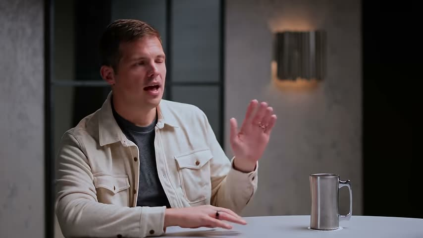
10:21 · 변형은 하시나요? → 처음엔 똑같이 → 보관료 없음 실험1분 28초
두 번째 질문의 재료는 크리스가 방금 한 말입니다. 당신은 기존 모델을 보고 복제하는 성향이 있는데, 라는 문장은 크리스의 이야기를 스티븐의 말로 한 번 정리한 것입니다. 그 위에 어디까지 복제하고 어디부터 변형하느냐는 경계를 묻습니다. 크리스는 처음엔 똑같이 베꼈고 시간이 지나며 경험을 적용했다고 답하고, 처음부터 비틀었다면 시장이 없었을 수도 있다고 합니다. 이어서 풀필먼트 사업에서 보관료를 없애 단순하게 가려다 알게 된 것을 꺼냅니다. 모방하라는 추상적인 조언이 처음에는 정확히 베끼고 나중에 조정하라는 단위로, 그리고 실제 실패 사례로 쪼개진 것입니다.
카피할 기술. 추상적인 조언을 들으면 그 조언을 실제로 해 봤는지 묻고, 해봤다면 어떤 순서로 무엇을 했는지 행동 단위까지 쪼갭니다. 예: 선배가 고객 이야기를 많이 들으라고 조언하면, 직접 해 보신 경우를 하나 말씀해 달라고 하고, 그때 첫 질문이 무엇이었는지, 어디에서 고객 반응이 달라졌는지까지 묻는 식입니다.
복기 3. 자신의 지식과 사고를 질문에 집어넣는다
챕터 6 버키스 경험이라는 제목이 붙은 구간(20:18)입니다. 앞 챕터에서 크리스가 이미 되는 사업을 따라 하라는 이야기를 이어 간 뒤, 스티븐은 질문 대신 자기가 만든 틀을 먼저 내놓습니다.
스티븐: 사업에서 거의 모든 것은, 크게 말해서 두 범주로 나눌 수 있다는 생각이 들었어요. 하나는 수천 명이 먼저 겪었고 같은 해법과 사고가 여전히 유효한 오래된 문제. 다른 하나는 AI처럼 새로운 문제와 기회를 만드는 새로운 문제. … 오래된 문제에는 전문성이 답이죠. … 새로운 문제는 우리 업계에 청사진이 없는 새로운 도전이라서 실험이 답입니다. 이게 대체로 맞다고 보시나요? — 크리스: 100% 맞아요. 저는 마약만 빼고 다 테스트해라고 말해요. 우린 늘 테스트하고, 그게 우리가 하는 모든 일의 기반이에요. — 스티븐: 그런데 오래된 문제에도 테스트하시나요? — 크리스: 예를 들면요? — 스티븐: 현금흐름 관리, 수습 기간과 퇴사 통보 기간 같은 채용 원칙, 법적 구조와 계약 같은, 선례가 확립돼 있고 세상에 근본적으로 달라진 게 없는 것들이요.
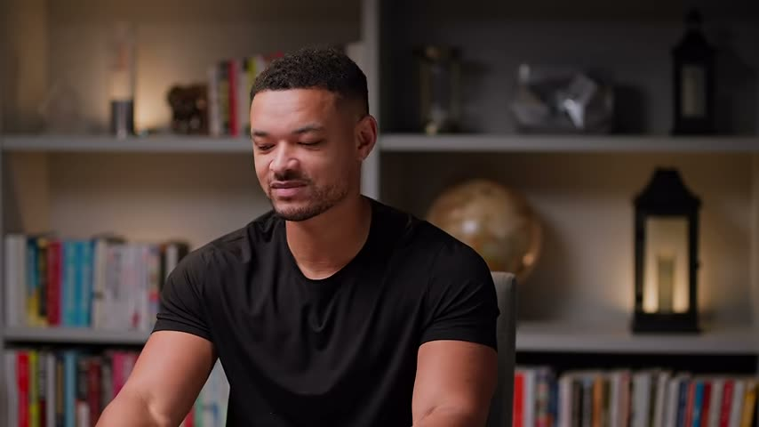
10:27 · 오래된 문제 vs 새로운 문제 → 오래된 문제에도 테스트하시나요?1분 19초
여기서 가장 두드러지는 것은 3번 기존 지식 활용입니다. 스티븐은 질문하기 전에 자기가 만든 두 범주를 먼저 말합니다. 오래된 문제에는 전문성이, 새로운 문제에는 실험이 답이라는 틀입니다. 그리고 이게 대체로 맞다고 보시냐고 묻습니다. 크리스가 100% 맞다고 하자 스티븐은 그 틀의 경계를 시험합니다. 오래된 문제에도 테스트를 하느냐는 것입니다.
크리스가 예를 들면요 하고 되묻자 스티븐은 막힘없이 구체적인 예 세 가지를 댑니다. 현금흐름, 채용 원칙, 법적 구조와 계약입니다. 질문하는 사람이 자기 영역의 지식을 갖고 있어야 이런 대답이 나옵니다. 예시를 즉석에서 대지 못했다면 대화는 거기서 멈췄을 것입니다.
크리스: 오래된 문제라면, 지난 10년 안에 흥미로운 방식으로 풀어낸 사례를 찾아서 그걸 따라 할 가능성이 높아요. 채용으로 말하면, 전통적으로 기업은 몇 시간, 며칠, 몇 주를 써서 라운드마다 한 사람씩 면접을 봅니다. 그런데 아마 세계 최고의 스타트업 인큐베이터일 와이콤비네이터는 면접이 7분이에요… 저도 채용을 그렇게 합니다. 한 사람에게 30일을 올인하는 것보다, 다섯 명에게 30일간 실력을 보여줄 기회를 주는 대수의 법칙 방식을 훨씬 선호해요… — 스티븐: 그리고 아까 시작하셨다는 보관 창고 회사 사례는, 오래된 문제를 만나서 혁신하고 실험하려 했지만, 사람들이 어떻게 행동하는지와 사업이 망하는 법칙이 여전히 유효했던 거네요. — 크리스: 네. 2년짜리 실험이 끝났을 때 우리는 경쟁사들과 똑같은 모습이 돼 있었어요. 처음부터 거기서 시작했다면 2년을 아꼈을 겁니다.
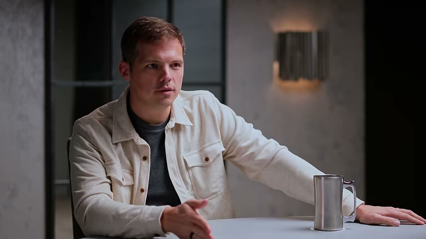
10:28 · 와이콤비네이터 7분 면접 → 보관 창고 회사 사례1분 15초
크리스의 답은 와이콤비네이터의 7분 면접과 자신의 채용 방식으로 이어지고, 스티븐은 그 답을 받아 앞 챕터의 창고 회사 이야기를 다시 꺼냅니다. 한참 전에 들은 이야기를 기억해 두었다가 지금의 틀 안에 놓는 것입니다. 5번의 연결선이 여기서는 바로 앞 답변이 아니라 몇 챕터 앞의 답변까지 닿아 있습니다. 결국 스티븐의 두 범주라는 틀은 크리스의 경험으로 한 번 검증되고, 오래된 문제에도 실험이 필요한 경우가 있는지라는 질문으로 한 번 더 시험된 셈입니다.
대장님과 연결: 안내 자료는 이 기술이 대장님을 뵐 때 굉장히 중요하다고 적어 두었습니다.
카피할 기술. 자기 생각과 가설을 먼저 내놓고 질문합니다. 대화하면서 내 생각이 맞는지 틀린지, 어디까지 맞는지 검증하고 고칩니다. 예: 회의에서 이번 분기 이탈 고객이 늘었다면, 제 가설은 신규 고객보다 기존 고객이 가격에 더 민감하다는 건데 현장에서 보시기엔 어떤지 묻고, 상대가 아니라고 하면 어떤 경우가 예외인지 이어서 묻는 식입니다.
CHAPTER 02
복기 4~6: 원리를 뽑고, 기준을 묻고, 개념을 행동으로 바꾼다
이야기에서 내 것으로 가져올 수 있는 것을 끌어낸다
이 세 장면은 이야기를 듣는 데서 끝나지 않고 이야기 아래의 원리, 기준, 정의를 꺼내는 질문들입니다. 사례를 들으면 사례가 재미있습니다. 하지만 사례를 내 것으로 쓰려면 원리와 기준이 필요하고, 그 원리와 기준은 대개 상대가 말하지 않고 지나가는 곳에 있습니다.
복기 4. 특수한 성공 사례에서 보편적 원리를 추출한다
챕터 7 창업은 모두를 위한 걸까요?(23:00)입니다. 크리스는 풀필먼트 사업을 하던 때 버키스에 갔다가 웹사이트에 쇼핑 버튼이 없는 것을 보고, 매장의 상품을 하나씩 사서 사진을 찍어 비공식 온라인 스토어를 열었습니다. 기자가 기사를 썼고 첫 30일에 광고 없이 수십만 달러를 팔았으며, 5년이 지난 지금도 지분 100%를 갖고 있다고 합니다. 스티븐이 이 이야기에 수백만 달러를 벌어 줬냐고 확인한 뒤 던지는 질문입니다.
스티븐: 이 이야기를 듣는 사람은 거기서 무엇을 가져가 자기 삶에 적용할 수 있을까요? 세상에서 그런 기회를 찾는 방법이 있나요, 아니면 단 한 번뿐인 건가요? 다른 브랜드로도 그렇게 할 수 있을까요? — 크리스: 그 질문을 정말 많이 받아요. 저도 모릅니다. 그런 다른 브랜드가 있다면 제가 하고 있겠죠. 트레이더 조스가 비슷하지만 소송을 많이 거는 회사예요. 오프라인 사업을 위한 온라인 브랜드를 여는 그 실험은 번개를 병에 담은 격이었다고 생각해요. 하지만 이 얘기에 낙담하지 마세요. 더 큰 차원에서 사람들은 자기 호기심 어린 아이디어를 아주 진지하게 받아들여야 합니다. 아이디어를 떠올린 시점과 그에 대해 뭔가 하는 시점 사이의 시간을 줄여야 해요. 그러면 행동 편향 근육이 강해지니까요…
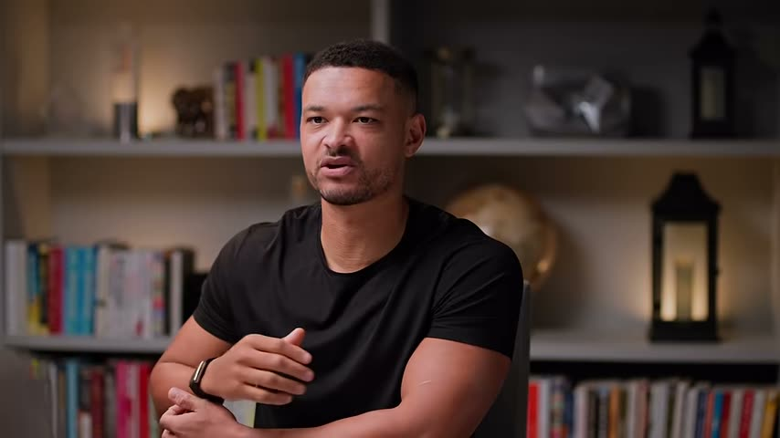
10:34 · 한 번뿐인가요? 다른 브랜드로도 가능할까요? → 낙담하지 마세요48초
스티븐의 질문은 세 개가 한꺼번에 나옵니다. 무엇을 적용할 수 있나, 한 번뿐인가, 다른 브랜드로도 가능한가. 모두 버키스 사업을 그대로 따라 할 수 있느냐가 아니라 이 이야기에서 가져갈 수 있는 것이 무엇이냐를 묻고 있습니다. 크리스도 사업은 재현하기 어렵다는 점을 솔직히 인정합니다. 저도 모릅니다, 번개를 병에 담은 격이었다는 말이 그것입니다. 그 대신 이야기를 한 단계 위로 올려 아이디어와 행동 사이의 시간을 줄이라는 원리로 답합니다.
스티븐은 이 답에서 멈추지 않고 질문의 방향을 사업에서 사람으로 한 번 더 옮깁니다.
스티븐: 버키스에 들어가면 어떻게 하면 이걸로 뭔가 할 수 있을지까지 생각하시는데, 대부분은 버키스에 들어가서 물건 사고 나오잖아요. 세상을 보는 방식에 뭔가 근본적인 게 있나요? — 크리스: 있어요. 하지만 제가 특별히 다르다고 생각하진 않아요. 많은 사람이 그런 아이디어를 가지고 있어요. 버키스에 들어가서 개선할 수 있는 걸 보지만, 그냥 스쳐가는 생각으로 지나가죠. 저는 그 아이디어에 대해 뭔가 하는 데 전문가가 된다고 생각해요… — 스티븐: 맞아요, 안 해본 거니까요. — 크리스: 해보기 전까지는 누구도 어떤 경험도 없어요. 모든 전문가는 초보자로 시작했어요.
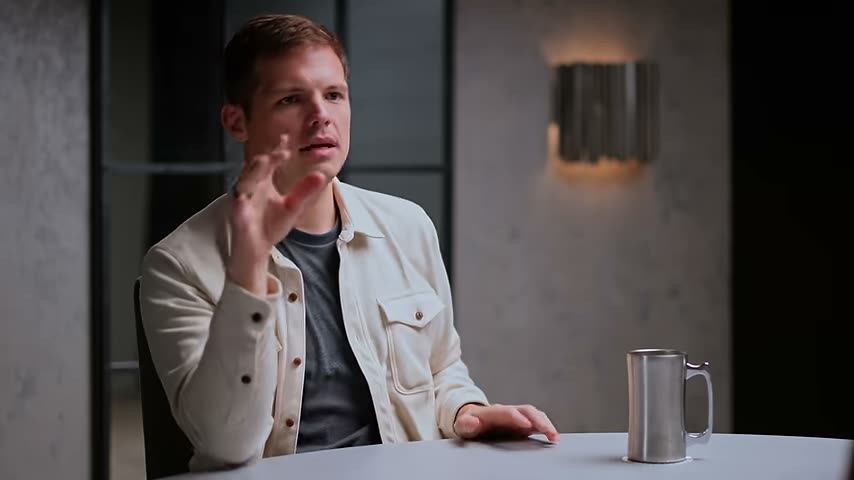
10:35 · 대부분은 물건 사고 나오는데, 근본적인 게 있나요?1분 3초
이 질문은 같은 가게에 들어간 두 부류의 사람을 대비시킵니다. 크리스는 사업 기회를 보고, 대부분은 물건을 사고 나옵니다. 스티븐이 알고 싶은 것은 버키스 사업 자체보다 그 사업을 발견한 사람의 사고방식으로 보는 것이 자연스럽습니다. 사업은 따라 할 수 없어도 발견하는 능력은 따라 할 수 있는지 확인하는 질문입니다. 여기서 쓰인 포인트는 5번과 1번입니다. 앞 답변의 행동 편향 근육이라는 말에서 출발해, 그 근육은 어디서 오느냐로 이어졌습니다. 결과로 나온 것이 생각과 행동 사이의 간격이라는 원리입니다.
대장님과 연결: 안내 자료는 이 기술이 대장님이 처음에 주신 5번 항목과 직접 이어진다고 적어 두었습니다.
카피할 기술. 개별 사례를 들으면 그 사례를 반복해서 쓸 수 있는 원리를 뽑습니다. 사례가 끝나면 이 방법을 다른 사람도 쓸 수 있는지, 같은 상황에 있던 다른 사람과 이 사람은 무엇이 달랐는지 묻습니다. 예: 영업 잘하는 선배가 어려운 고객을 계약으로 바꾼 이야기를 들었다면, 그 고객에게만 통한 방법인지 다른 고객에게도 쓸 수 있는 방법인지, 같은 미팅에 있던 다른 사람은 무엇을 놓쳤는지 묻는 식입니다.
복기 5. 상대방의 판단 기준을 끌어낸다
챕터 8 플랜 B가 있어야 할까요?(30:27)입니다. 스티븐이 모두에게 맞는 일이냐며 어떤 사람이 어느 쪽인지 무엇이 가르느냐고 묻자, 크리스는 그 아이디어에 대해 얼마나 멀리 가느냐라고 답합니다. 아이디어를 문자로 보내고 사라지는 친구와 계속 이야기하는 친구가 있고, 앞의 친구들은 걱정하지 않는다는 것입니다. 스티븐이 어차피 스스로 걸러지는 구조네요, 하고 정리한 뒤 질문을 바꿉니다.
스티븐: 머릿속으로 절대 창업하면 안 되는 사람을 한 명 떠올려 보세요. — 크리스: 네. — 스티븐: 왜 그 사람이 떠올랐나요? 누군지는 말씀 안 하시고요. — 크리스: 직장에서 돈을 많이 벌고, 직장이 그럭저럭 마음에 들어요. 비참하진 않죠. 그리고 40대 후반이라 뭔가 시작하기엔 리스크가 너무 크다고 느낄 거예요. — 스티븐: 객관적으로도 그 사람에게는 리스크가 너무 크다고 보시나요? — 크리스: 네. — 스티븐: 그럼 위험 대비 보상으로 볼 때 이 경우엔 보상이 위험을 상쇄하지 못한다고 보시는군요. — 크리스: 네…
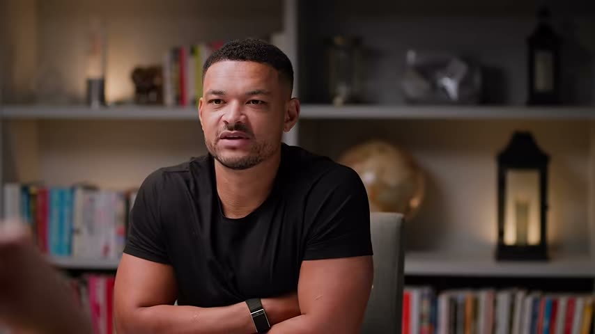
10:38 · 절대 창업하면 안 되는 사람을 떠올려 보세요1분 1초
이어서 스티븐은 정반대의 사람을 떠올리게 합니다.
스티븐: 반대로, 기업가는 아니지만 꼭 기업가가 돼야 할 것 같은, 왜 안 하는지 의아한 사람을 떠올려 보세요. 왜 그 사람이 떠올랐나요? — 크리스: 저에게 아이디어를 가장 자주 가져오는 사람이고, 정말 좋은 아이디어들이에요. 엔지니어예요. 그래서 세상을 그런 식으로 봅니다. 엔지니어는 훌륭한 기업가가 돼요… 객관적으로 보면 그는 직장에서 꽤 불행해요. — 스티븐: 왜 안 하고 있죠? — 크리스: 불안감, 두려움이라고 생각해요. 가족에게 안락한 생활을 제공해 온 확실한 것을 놓고, 다시는 그걸 못 얻을 수도 있다는 두려움이요… — 스티븐: 그의 생각에 약간의 결함이 있다고 보세요? 가족을 위한 안정에 대한 그의 믿음이 사실인데도 여전히 그가 해야 한다고 보시는 건, 사고방식에 어떤 결함이 보인다는 뜻 같은데요. — 크리스: 네. 직장을 그만둘 필요가 없으니까요. 밤과 주말에 할 시간은 충분해요…
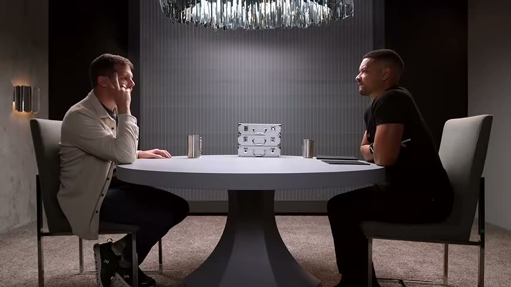
10:39 · 정반대의 사람 → 왜 안 하고 있죠? → 생각에 결함이 있나요?1분 51초
이 장면은 어떤 사람이 창업하면 좋을까요, 라는 질문과 전혀 다릅니다. 그 질문에는 크리스가 교과서 같은 일반론으로 답하기 쉽습니다. 스티븐은 대신 실제로 아는 사람을 한 명 떠올리게 하고, 누군지는 말하지 않아도 된다고 덧붙입니다. 구체적인 기억은 꺼내되 상대의 부담은 덜어 주려는 장치로 읽힙니다. 그 사람을 왜 떠올렸는지 물으면 크리스의 판단 기준이 말로 나옵니다. 직장에서 돈을 많이 벌고, 직장이 마음에 들고, 40대 후반이라는 것입니다.
스티븐은 거기서 한 번 더 확인합니다. 객관적으로도 그렇게 보느냐, 위험 대비 보상으로 정리하면 이런 뜻이냐고 묻는 것입니다. 그다음 정반대의 사람을 떠올리게 하면, 재능과 좋은 아이디어가 있는데 직장이 불행한 사람이 나옵니다. 두 사람을 나란히 놓자 크리스의 판단 기준이 두 방향에서 보입니다. 이 장면의 포인트는 5번과, 4번의 변형입니다. 주장과 부딪히는 사례가 아니라 정반대의 두 사례를 나란히 놓는 방식입니다.
답은 곧 이어지는 이야기로도 연결됩니다. 스티븐이 결함이 있다고 보느냐고 묻자 크리스는 밤과 주말에 할 시간이 충분하니 직장을 그만둘 필요가 없다고 답하고, 곧바로 말합니다. 사실 퇴사에 대한 자신의 생각과는 모순되지만, 주 20시간 하던 부업을 40시간으로 늘리고 풀타임 일을 그만두면 5만 달러가 50만 달러가 되더라는 것입니다. 한 사람의 이야기에서 크리스 자신의 판단이 가진 긴장이 드러난 것입니다.
대장님과 연결: 안내 자료는 이 기술을 대장님이 사람을 판단하는 기준을 공부할 때도 쓸 수 있다고 적어 두었습니다.
카피할 기술. 기준을 추상적으로 묻지 말고 구체적인 대상을 떠올리게 한 뒤, 서로 다른 대상을 비교하게 합니다. 예: 어떤 사람이 좋은 팀원이냐고 묻는 대신, 같이 일해 본 사람 중 가장 일이 잘 맞았던 사람과 가장 안 맞았던 사람을 한 명씩 떠올려 달라고 하고, 각각 왜 떠올랐는지 묻는 식입니다.
복기 6. 상대방이 말하는 개념을 관찰 가능한 행동으로 바꾼다
챕터 12(47:10)에서 크리스는 아이디어가 있으면 2주 뒤에도 여전히 그 생각을 하고 있는지가 자기 기준이라고 말했고, 인터뷰 앞부분에서도 이미 있는 사업은 누군가 검증해 줬다는 뜻이라고 말했습니다. 검증이라는 단어가 몇 번 지나간 뒤 챕터 13 제품을 테스트하는 법(48:53)이 시작되며 스티븐이 그 단어를 다시 집어 듭니다.
스티븐: 아까 검증이라는 말을 쓰셨는데, 아이디어가 많은 사람들에게 정말 도움이 될 얘기 같아요. 아이디어를 최대한 빨리 검증한다는 것 말이에요. 어떻게 검증하나요? 직접 검증해 본 아이디어 사례를 들어주실 수 있나요? 검증이 무슨 뜻인가요? — 크리스: 저는 사람들이 제 제품이나 서비스에서 기쁨을 느끼는 걸 보고 싶어요. 음, 괜찮네요 정도가 아니라요… 제 아내가 쿠키바 사업을 해요. 네모난 쿠키인데 정말 맛있어요… 이걸 검증하는 가장 좋은 방법은 동네 파머스 마켓에 가서 자리를 잡고 시식을 나눠주면서 사람들을 지켜보는 거였어요. 그들이 말하는 것과 반응하는 것이 같은지를 보는 거죠.
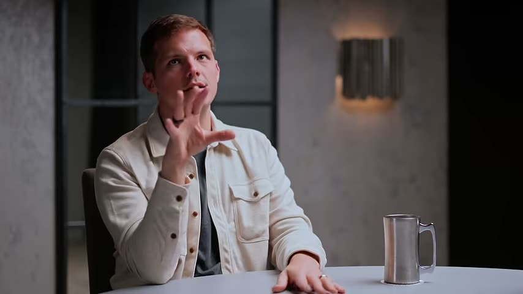
10:55 · 아까 검증이라는 말을 쓰셨는데56초
스티븐: 그게 무슨 뜻이죠? — 크리스: 가끔 우리는 필요 없는 곳에 인터넷을 써요. 아내는 이걸 온라인으로 팔기도 했고, 친구와 가족에게 전국으로 배송도 했어요. 너무 맛있어요, 사랑해요. 하지만 저는 먹는 걸 못 봤으니까 정말 좋아하는지 몰라요… 그들이 하는 말과, 몸짓 언어, 제품이나 서비스를 경험할 때의 반응을 다 관찰해야 해요. 이 세 가지가 모두 겹친다면… 정말 특별한 걸 가진 거죠. — 스티븐: 그리고 검증이란, 내가 만드는 것에 시장이 신경 쓰는지를 최대한 빨리 확인하는 거죠? — 크리스: 네. 저는 바위를 언덕 위로 밀고 올라가는 모습을 그려봐요…
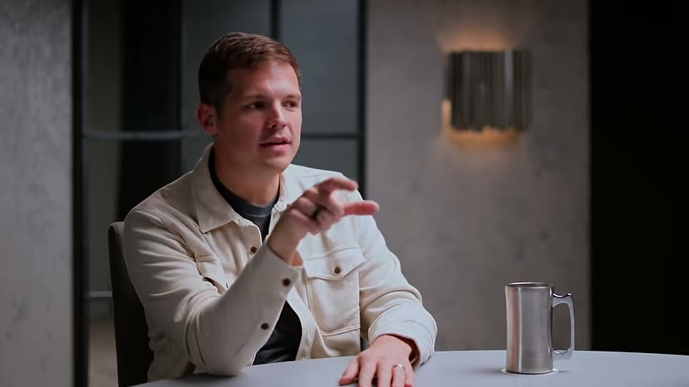
10:57 · 그게 무슨 뜻이죠? → 말, 몸짓, 반응 → 검증이란 시장이 신경 쓰는지 확인하는 거죠?1분 19초
1번과 2번이 한꺼번에 나옵니다. 스티븐은 아까 쓰신 검증이라는 말이라며 크리스가 앞에서 한 말을 기억해 꺼냅니다. 그리고 한 질문 안에 세 겹을 겹칩니다. 어떻게 검증하는지, 직접 검증해 본 사례가 있는지, 그래서 검증이란 무슨 뜻인지입니다. 정의를 묻는 질문이 맨 뒤에 붙어 있다는 점이 눈에 띕니다. 방법과 사례를 먼저 듣고 나면 정의가 구체적인 장면 위에서 나오기 때문입니다.
크리스가 쿠키바 이야기를 하며 말하는 것과 반응하는 것이 같은지 본다고 하자, 스티븐은 그게 무슨 뜻이죠, 하고 한 번 더 멈춥니다. 그러자 말, 몸짓 언어, 제품을 경험할 때의 반응이라는 관찰 대상 세 가지가 나옵니다. 개념이 눈으로 볼 수 있는 행동으로 바뀐 것입니다.
마지막 질문이 중요합니다. 스티븐은 지금까지 들은 것을 자기 말로 정리해 확인합니다. 검증이란 내가 만드는 것에 시장이 신경 쓰는지를 최대한 빨리 확인하는 거죠? 이해가 맞는지 확인하는 동시에, 틀렸다면 크리스가 바로 고칠 수 있는 자리를 만들어 준 것입니다. 크리스는 네, 하고 받은 뒤 바위가 쫓아오는 비유로 한 번 더 넓힙니다.
카피할 기술. 질문하고, 구체화하고, 그리고 내 말로 다시 설명해서 이해가 맞는지 확인합니다. 예: 고객이 좀 더 빠르게 대응해 달라고 하면, 빠르다는 게 하루 안에 회신하는 건지 요청 당일 처리까지인지 물어 기준을 행동으로 바꾼 뒤, 그러니까 접수 후 하루 안에 첫 회신이 있으면 되는 거죠, 하고 내 말로 확인하는 식입니다.
CHAPTER 03
복기 7~8: 상황을 던지고, 반대 사례를 가져온다
답을 묻는 대신 과정을 보거나, 주장의 경계를 시험한다
앞의 장면들이 상대가 가진 이야기를 꺼내는 질문이었다면, 이 두 장면은 상대의 사고가 작동하는 모습을 직접 보려는 질문입니다. 하나는 새로운 상황을 던져서, 하나는 반대 사례를 가져와서 그렇게 합니다.
복기 7. 가상의 상황을 만들어 상대방의 사고 과정을 관찰한다
챕터 14 페이스북 광고를 배우는 게 얼마나 중요할까요?(52:05)입니다. 스티븐이 린 스타트업을 언급하며, 직장을 그만둬야 하나 2~3년 만들어 봐야 하나 하고 생각하는 청중에게 아이디어를 빠르게 스트레스 테스트하는 방법을 설명해 달라고 합니다. 크리스는 도구를 하나만 고르라면 인류 네 명 중 한 명이 매일 쓰는 도구, 페이스북이라고 답합니다. 그러자 스티븐이 상황을 하나 던집니다.
스티븐: 아무 사업이나 예를 들어드릴 테니 그걸 페이스북 제품으로 어떻게 검증하는지 청중에게 알려주세요. — 크리스: 좋아요. — 스티븐: 저는 여성용 크레아틴 브랜드를 생각 중이에요. 크레아틴이 맛있게 만드는 거요. — 크리스: 좋아요. 파우더인가요, 젤리인가요? 어떤 형태인가요? — 스티븐: 모르겠어요. — 크리스: 그럼 둘 다 해봅시다. 아주 비직관적이고 아마 통하지 않을 것 같지만 마찰이 가장 적은 걸 할게요… 그리고 페이스북 마켓플레이스에 사진을 올려요. — 스티븐: 사진만 올린다고요? — 크리스: 네. 맛있는 여성용 크레아틴 브랜드라고 쓰는 거예요. 크레아틴이 인지 기능을 향상한다는 사실 같은, 평범한 광고 문구를요. AI로 만들어도 돼요. 이 시점에서는 중요하지 않아요.
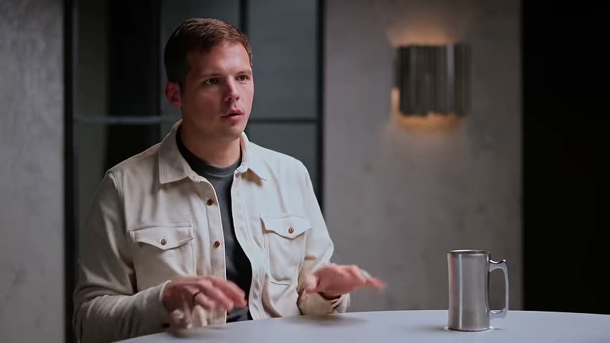
10:59 · 아무 사업이나 예를 들어드릴 테니 → 여성용 크레아틴 → 사진만 올린다고요?1분 8초
스티븐은 크리스에게 정답을 묻지 않았습니다. 자기가 지어낸 사업을 던지고, 크리스가 그것을 어떻게 검증해 나가는지 과정을 보여 달라고 합니다. 일부러 덜 정해진 채로 던진 것도 눈에 띕니다. 파우더인지 젤리인지 크리스가 묻자 스티븐은 모르겠어요, 하고 답합니다. 그러자 크리스는 결정을 미루지 않고 둘 다 해 보자고 합니다. 그 결과 설계 원칙이 드러납니다. 마찰이 가장 적은 것부터, 사진만이라도 올려서 세상의 반응을 받아 오는 것입니다. 질문이 아니라 과제를 던졌기 때문에 나온 장면입니다.
크리스가 사진만 올리겠다고 하자 스티븐은 사진만 올린다고요, 하고 되묻습니다. 시청자도 같은 자리에서 멈칫했을 대목으로 보입니다. 이 한 번의 되물음이 크리스에게서 왜 마켓플레이스인지에 대한 설명을 끌어냅니다. 이후 크리스는 클릭, 문의, 조회수 세 가지 통계를 구글 시트에 기록하며 비교하는 방법을 길게 설명합니다.
스티븐의 두 번째 질문은 시뮬레이션이 한 단계 진행된 뒤에 나옵니다.
스티븐: 이 기술이 있는 사람이 얼마나 될지 궁금하네요. — 크리스: 아주 적어요. 그래서 광고 대행사가 그렇게 많은 돈을 받는 거예요. — 스티븐: 그럼 크레아틴 상황의 데이터가 스프레드시트에 쌓였을 때, 이걸 추진할 가치가 있는지 어떻게 결정하나요? — 크리스: …제 아이디어를 물리적 제품으로 만들어주는 회사예요. 이걸 실제로 만들 수 있는 보충제 회사를 찾아서 대략 제 생각을 말하고 샘플을 요청합니다. 그리고 그 샘플로 직접 사람들에게 피드백을 받아요. 다만 이 페이스북 테스트에서 어떤 형태, 가격대, 색상, 맛이 좋은지 나오기 전에는 샘플을 받지 않을 거예요.
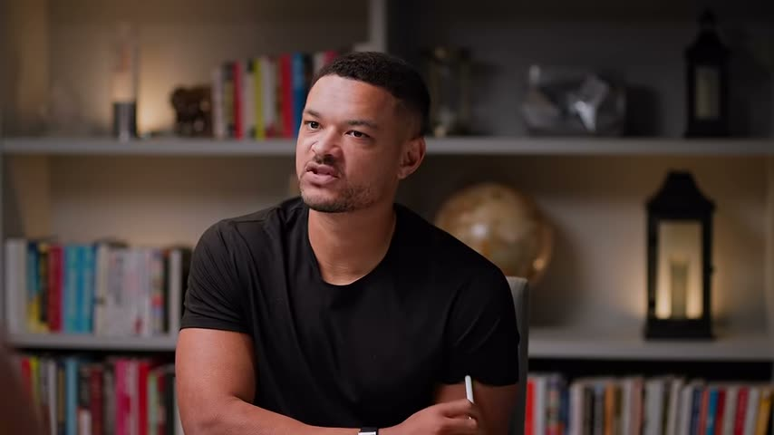
11:04 · 데이터가 쌓였을 때, 추진할 가치는 어떻게 결정하나요?1분 14초
여기서 보이는 포인트는 5번입니다. 크리스의 설명이 광고 이야기로 길게 흘러간 뒤에도 스티븐은 처음에 던진 상황으로 돌아옵니다. 크레아틴 상황의 데이터가 쌓였을 때라는 말은, 앞에서 설명한 과정이 끝나는 지점에서 다음 결정으로 넘어가도록 질문을 이어 붙인 것입니다. 질문의 초점은 이 사업이 좋으냐가 아니라 결정을 어떻게 하느냐입니다. 크리스의 답은 위탁 제조업체를 찾아 샘플을 받는 것인데, 그 시점도 테스트 결과가 나온 뒤라고 순서를 분명히 합니다.
영상 전체에 흩어진 500달러, 1,000달러, 5,000달러 가방도 같은 장치입니다. 제약조건을 주면 무엇부터 생각하고 무엇에 돈을 쓰고 어떤 순서로 움직이는지를 끌어낼 수 있습니다.
카피할 기술. 구체적인 상황과 제약조건을 제시하고 상대가 그 안에서 어떻게 결정하는지 관찰합니다. 예: 선배에게 신규 거래처 개척 방법을 묻는 대신, 지금 예산이 한 달에 30만 원이고 담당자 이름만 알고 있다면 첫 주에 무엇을 하시겠냐고 묻고, 그 순서와 이유를 따라가는 식입니다.
복기 8. 상대방의 주장과 반대되는 사례를 가져온다
챕터 17에서 크리스는 사업가를 시작하는 사람, 유지하는 사람, 마무리하는 사람으로 나누고 자신은 뼛속까지 시작하는 사람이라고 말했습니다. 이어지는 챕터 18(1:02:05)에서 스티븐은 크리스가 사업을 75~80개 시작했다는 점을 짚으며 긴 질문을 시작합니다. 사례를 하나씩 쌓아 올립니다.
스티븐: 당신 이야기에서 흥미로운 점 중 하나는, 사업을 75~80개 시작하셨다는 거예요. 케빈 올리리처럼 스티브 잡스 같은 역대 최고의 기업가들과 일해 본 사람들, 일론 머스크를 잘 아는 사람들과 얘기하면 집중을 말해요. … 마크 저커버그도 엄청난 집중력으로 유명하죠. … 일론 머스크는 거의 100% 신호로 움직이는 유일한 사람이라고요. … 이게 수많은 부업, 수많은 사업, 최대한 많은 걸 하라는 서사와 모순돼 보여요. 어떻게 보세요? 당신은 어쨌든 백만장자가 됐고 그런 의미에서 자유로운 삶을 만들었지만, 세계에서 가장 큰 회사들을 보면 집착에 가까운 집중이 있는 것 같아요. — 크리스: 정말 좋은 질문이에요. 다른 조건이 같다면 더 집중하는 사람이 억만장자가 될 가능성이 높다고 생각해요. 하지만 모멘텀으로 돌아가 보죠… 저는 억만장자가 되고 싶은 욕망이 진짜로 없어요. 되면 좋지만, 어차피 제 아이들에게 수천만 달러를 물려주고 싶지도 않아요… 집중도 해봤고 이사회도 가져봤어요. 그런 건 전혀 원하지 않습니다. 정말로요.
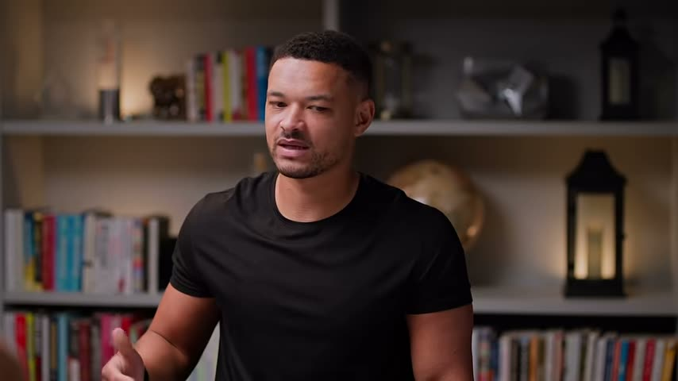
11:09 · 잡스, 저커버그, 머스크의 집중 → 모순돼 보여요, 어떻게 보세요?1분 4초
4번 모순 사례가 가장 선명하게 나오는 장면입니다. 스티븐이 한 일을 단계로 나누면 이렇습니다. 먼저 크리스의 방식, 곧 여러 사업을 시도하며 모멘텀을 유지하는 방식을 확인합니다. 그다음 반대 방향의 사례 세 가지를 세웁니다. 잡스는 시간의 80%를 가장 중요한 일에 썼다는 이야기, 저커버그는 모바일에 뒤처졌다고 깨닫자 다른 회의를 받지 않았다는 이야기, 머스크는 거의 100% 신호로 움직인다는 이야기입니다. 대본에 따르면 이 사례들은 스티븐이 다른 사람들에게 들었거나 인터뷰에서 들은 이야기로, 스티븐 자신이 가진 지식과 인맥이 질문에 들어간 것입니다.
중요한 것은 그다음 문장입니다. 스티븐은 당신이 틀렸다고 하지 않고 모순돼 보여요, 어떻게 보세요, 라고 묻습니다. 판정하지 않고 해명할 자리를 내주는 말입니다. 그리고 성공을 존중하는 말도 붙입니다. 어쨌든 백만장자가 됐고 자유로운 삶을 만들었다고 인정한 뒤 질문합니다. 반대 사례를 가져오되 상대의 성취를 깎지 않는 방식으로 읽힙니다.
크리스의 답이 나오자 스티븐은 조건을 바꿔 한 번 더 시험합니다.
크리스: …저는 멋지게 살고 싶고, 좋은 아빠이고 곁에 있는 아빠이고 싶어요. 제게 그건 더 적게 집중하는 모습입니다. 더 많이가 아니라요. — 스티븐: 앞으로 10년간 집중해서 한 가지로 10억 달러에 도달하고, 그 후엔 더 높은 위험과 더 큰 즐거움, 더 쾌락 중심의 실험적 베팅을 앞으로 40~50~60년 동안 할 수 있다면요? — 크리스: …그런 더 큰 베팅은 결국 더 많은 회의, 더 많은 출장, 아이들과 더 많은 떨어진 시간이 될 거예요. 논란이 될 수 있는 말이겠지만, 저는 세상을 바꾸려는 게 아니에요. 사람들이 사업을 시작하도록 돕고 싶고, 그건 아이폰 하나로 할 수 있어요.
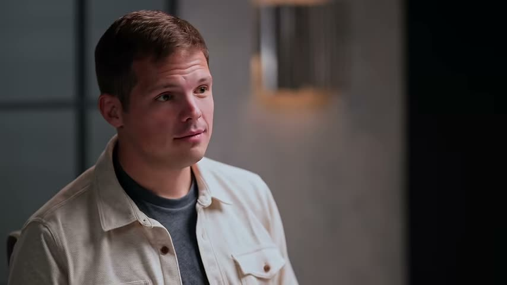
11:11 · 그 대신 10년 집중하고 그 후에 실험한다면요?1분 18초
앞의 질문에 크리스는 집중하지 않아도 괜찮다고 답합니다. 스티븐은 그 답이 억만장자가 되고 싶지 않아서인지, 집중에 따르는 대가가 싫어서인지를 가려내려는 듯 조건을 바꿉니다. 먼저 10년만 집중해서 10억 달러에 도달하고, 그 후에는 하고 싶은 실험을 40~60년 하면 어떻겠느냐는 것입니다. 크리스의 주장이 어느 조건에서 성립하고 어느 조건에서 무너지는지를 보는 질문으로 읽힙니다.
그 결과 대화는 집중력이라는 주제를 넘어 크리스가 어떤 삶을 원하는지로 넘어갑니다. 회의, 출장, 아이들과 떨어진 시간이 크리스에게 어떤 비용인지가 이 질문 덕분에 드러났습니다. 집중이 억만장자에게 유리하다는 말과 크리스가 집중하지 않겠다는 말이 서로 어긋나지 않는 지점도 같이 보입니다. 성공의 기준이 다르다는 것입니다.
카피할 기술. 상대의 주장에 반대되는 사례를 떠올리고, 그 차이가 생기는 조건이 무엇인지 연구합니다. 질문은 판정이 아니라 해명을 청하는 모양으로 합니다. 예: 선배가 일은 빨리 쳐내야 한다고 주장하면, 반대로 느리게 하면서 성과를 낸 사례를 들어 어떤 조건에서는 빨리가 맞고 어떤 조건에서는 틀릴 것 같은지 같이 묻는 식입니다.
CHAPTER 04
복기 9~10: 답변에서 더 깊은 질문을 만든다
이해에서 끝내지 않고 안에 있는 더 근본적인 문제를 꺼낸다
마지막 두 장면은 질문을 이어 가는 힘이 어디서 나오는지를 보여 줍니다. 준비한 질문을 순서대로 던지는 게 아니라, 방금 나온 답에서 더 값어치 있는 단어와 문제를 찾아 그쪽으로 방향을 바꾸는 것입니다.
복기 9. 상대방의 답변에서 더 근본적인 문제를 발견한다
챕터 21 사업에서의 지분 배분(1:12:30)입니다. 스티븐이 팀 빌딩과 사업 파트너에 대해 묻자 크리스는 보통은 파트너가 필요 없고 파트너십이 결혼보다 어렵다고 말합니다. 크리스는 파트너를 정할 때는 구조를 99% 덜 고민한다는 말까지 하고, 자기가 반복한 큰 실패라고 인정합니다. 이 말 바로 뒤에 스티븐이 묻습니다.
스티븐: 사업 파트너와 잘 안 됐던 상황들에서, 혹은 전반적으로 누가 해줬으면 했던 조언은 뭔가요? 파트너가 일곱 명이었다고 읽었는데요. — 크리스: 15명이라고 돼 있어요. — 스티븐: 좋아요. 그 15번의 경우, 그 사업 관계에 들어가기 전에 누군가 해줬으면 했던 조언이 뭔가요? — 크리스: …다른 사람과 파트너가 되기 전에 자기 자신에 대해 더 알아야 해요. 대부분은 파트너를 맺을 때 사업가로서 자신이 누구인지 몰라요. 자신의 강점과 약점을 모르고, 상대의 강점과 약점은 더더욱 몰라요… — 스티븐: 지분은요? — 크리스: 50대 50이 오래된 기본값이죠. 첫 데이트에서 아이는 몇 명 원해요? 네 명이요. 좋아요, 네 명 낳아요. 결혼하고 무슨 일이 있어도 그만큼만 낳는 거예요 한다고 상상해 보세요. 그게 50대 50 파트너십이에요…
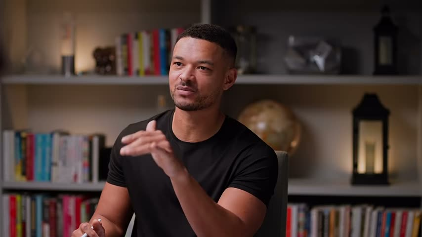
11:21 · 그 15번의 경우 조언이 뭔가요? → 지분은요?1분 12초
스티븐은 먼저 숫자에서 멈춥니다. 자기가 읽은 자료에는 파트너가 일곱 명이라고 되어 있었다는 말이고, 크리스가 15명이라고 바로잡자 그 15번째 경우를 짚어 같은 질문을 구체화합니다. 일반적인 조언을 묻는 대신 15번의 실패 경험을 기준으로 삼아, 그 관계에 들어가기 전에 누군가 해줬으면 했던 말을 묻습니다. 이 질문에서 보이는 것은 2번 멈추고 파고듦입니다.
그다음이 이 장면의 중심입니다. 크리스의 답은 자기 자신을 먼저 알라는 것인데, 스티븐은 이 답을 이어 가기보다 두 글자짜리 질문으로 방향을 옮깁니다. 지분은요? 앞의 답이 사업 파트너 일반에 대한 것이었다면, 그 안에서 실제로 부딪히는 문제인 지분 배분으로 한 단계 내려간 것입니다. 크리스는 50대 50을 결혼 첫 데이트에 비유하며 길게 답합니다.
크리스: …하지만 정의하기는 어려워요. 한 사람은 업계 경력이 30년이고 인맥과 전문성이 있어서 전화 한 통으로 모든 걸 바꿀 수 있고, 다른 사람은 18살에 투지만 있고 주 80시간을 쏟을 수도 있으니까요. — 스티븐: 투입한 시간이 같지 않다면 가치의 수준은 같다고 볼 수 있나요? — 크리스: 어려워요. 정말 어려워요. 내 전화 한 통이 우리에게 수천만 달러를 벌어줬는데, 너는 일만 했어. 네가 운영자니까 50대 50이어야 해라고 말하기가요. 둘 다 이의를 제기할 거예요.
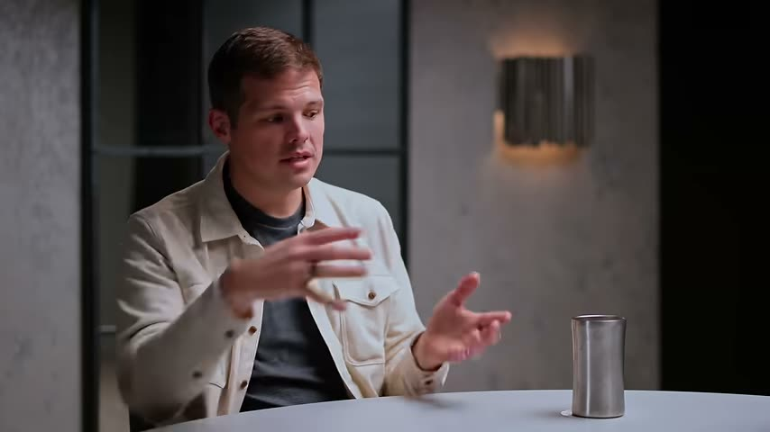
11:25 · 투입한 시간이 같지 않다면 가치도 같을까요?42초
크리스가 마지막에 꺼낸 두 사람, 곧 30년 경력자와 주 80시간을 쏟는 18살이 스티븐의 다음 질문의 재료입니다. 투입한 시간이 같지 않다면 가치의 수준도 같다고 볼 수 있느냐는 질문은 사업 파트너와 지분 이야기를 한 단계 더 근본적인 문제로 끌어올립니다. 사람이 제공하는 가치를 무엇으로 어떻게 측정할 것이냐는 문제입니다. 크리스는 어렵다고 두 번 말하며 그것이 정답 없는 문제임을 스스로 인정합니다. 그렇게 질문이 열린 채로 남는 것도 이 인터뷰가 시청자에게 남기는 것으로 읽힙니다.
참고로 스티븐은 이어서 자신의 경험을 꺼냅니다. 자기가 투자한 회사가 60~70개 정도 있는데 지분을 똑같이 나눠서 잘된 경우는 한 번 봤다는 이야기입니다. 3번 기존 지식 활용이 한 번 더 나옵니다.
카피할 기술. 답변을 듣다가 아직 해결되지 않은 문제를 발견하면, 그 안으로 한 단계 더 내려가는 질문을 만듭니다. 예: 팀장이 이번 프로젝트는 일정 때문에 힘들었다고 하면, 일정이 왜 그렇게 되었는지 묻고, 이어서 일정과 담당자 배정 중 어디서 처음 어긋났는지, 그 어긋남은 어떻게 확인할 수 있었는지로 내려가는 식입니다.
복기 10. 상대방의 답변에 따라 질문의 방향을 바꾼다
챕터 30(1:50:09)입니다. 기획 메모에는 이 장면이 상대의 성공과 실패를 비교해 공통점을 찾는 사례로도, 답변에 따라 질문의 방향을 바꾸는 사례로도 적혀 있습니다. 둘 다 이 장면 안에 있습니다. 앞에서 크리스가 RV 파크, 거시적 흐름 같은 이야기를 이어 간 뒤 스티븐이 질문을 바꿉니다.
스티븐: 시작한 모든 사업 중 가장 수익성이 높았던 건 뭔가요? 그리고 가장 쉬웠던 건요? — 크리스: 아. 승자가 뭐냐면, RV 파크 사업이나 텍사스 간식 사업, 제 이커머스 사업 중 하나일 거예요. 그리고 쉬웠던 건 쉬운 사업이나 업종이어서가 아니에요. 제가 그 사업을 운영할 좋은 운영자를 찾을 수 있을 만큼 성숙해졌기 때문에 쉬웠던 거예요. 저는 거의 관여하지 않았어요. 이해되시죠? — 스티븐: 네. 시작하는 사람인 당신이 지루해하는 순간에 사업이 죽지 않도록 운영해 줄 사람을 찾으신 거네요. — 크리스: 맞아요. 그래서 사업은 계속 성장하고 진화했어요. 둘 다 사실 꽤 어려운 업종이에요… 하지만 저에게는 좋은 운영자가 있었어요. — 스티븐: 좋은 운영자를 찾는 것에 대해 무엇을 배우셨나요? — 크리스: 음. 결국 전부 신뢰예요. 그들을 얼마나 신뢰할 수 있는가. 제가 그들을 얼마나 신뢰하는가…
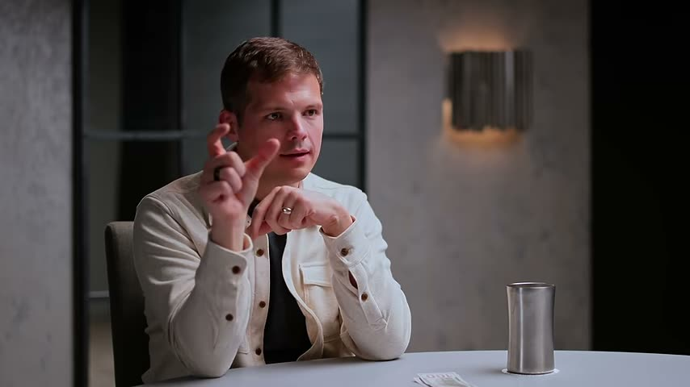
11:57 · 가장 쉬웠던 사업은? → 좋은 운영자 → 결국 전부 신뢰1분 15초
스티븐이 던진 질문은 어떤 사업이 가장 수익성이 높았고 가장 쉬웠느냐, 곧 사업 이름이 답일 질문입니다. 하지만 크리스의 답에서 가장 쉬웠던 이유는 쉬운 업종이어서가 아니라 좋은 운영자를 찾을 수 있을 만큼 자기가 성숙해졌기 때문이었습니다. 스티븐은 그 순간 질문의 대상을 사업에서 사람으로 바꿉니다. 좋은 운영자를 찾는 것에 대해 무엇을 배우셨나요?
여기서 쓰인 것은 먼저 1번 단어 포착입니다. 운영자라는 단어를 잡았습니다. 그리고 3번 기존 지식 활용도 보입니다. 스티븐이 네, 시작하는 사람인 당신이 지루해하는 순간에, 라고 받는 것은 챕터 17에서 크리스가 말한 시작하는 사람이라는 유형을 기억해 지금의 답에 겹쳐 놓은 것입니다. 이어 5번의 연결선이 이어집니다. 쉬웠던 사업, 왜 쉬웠나, 좋은 운영자, 기준은, 신뢰로 이어집니다.
스티븐: 그들에게 어떻게 인센티브를 주나요? — 크리스: 사업의 이익에서 직접이요. 그래야 더 사업가처럼 느끼고 파이의 더 큰 조각을 갖게 돼요. 20대에는 지분이라는 당근을 너무 자주 흔드는 실수를 했어요. 진심으로 그럴 생각이었지만 대부분의 지분은 0이 됩니다. 이제 30대인 지금은 지분보다 현금 흐름에 훨씬 더 무게를 둬요… — 스티븐: 분기별로요. — 크리스: 네.
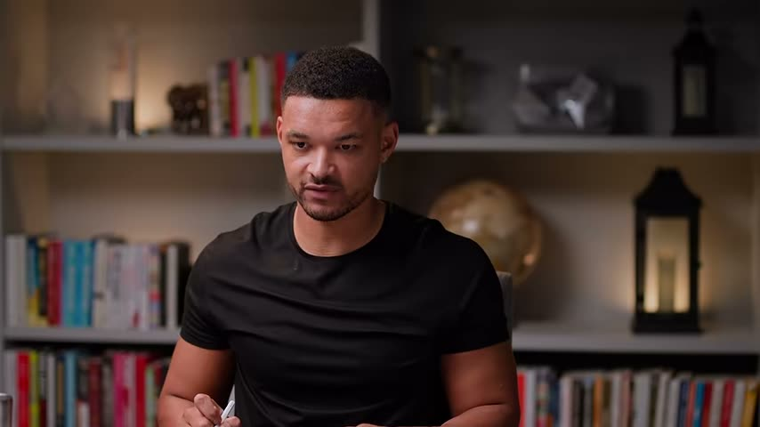
11:58 · 어떻게 인센티브를 주나요? → 이익에서 직접 → 분기별로요39초
운영자의 기준이 신뢰라는 답을 받은 스티븐의 다음 질문은 어떻게 그 사람들을 붙들어 두느냐입니다. 신뢰 다음에 이어질 가장 자연스러운 질문이고, 그 답은 이익을 직접 나누는 보상 구조였습니다. 크리스는 20대에 지분이라는 당근을 너무 자주 흔들었다는 실패도 함께 꺼냅니다. 앞에서 지분 배분 때문에 힘들었다는 이야기와 이어지는 지점으로 보입니다. 사업이 쉬웠던 이유에서 시작해 운영자를 찾는 기준, 운영자를 붙드는 보상까지 한 번의 질문이 세 겹의 정보로 내려간 것입니다.
카피할 기술. 준비해 온 질문에 집착하지 않습니다. 답변에서 더 가치 있는 정보를 발견하면 그쪽으로 대화를 전환합니다. 예: 제가 준비한 질문은 지난 분기 매출이 가장 많은 상품이었는데, 상대가 그건 상품이 아니라 담당자 덕이었다고 하면 상품 질문을 접고 그 담당자의 어떤 점이 달랐는지로 묻는 식입니다.
CHAPTER 05
복기 11: 인터뷰 전체를 어떻게 설계했나
질문의 기술에서 인터뷰의 설계로
지금까지는 장면 하나하나를 보았습니다. 이제 한 걸음 물러서서 두 시간 넘는 인터뷰 전체를 봅니다. 기획 메모는 이 인터뷰가 궁금한 걸 이것저것 물은 것이 아니라 과거, 경험, 사고방식, 기술, 판단 기준, 인생 철학의 순서로 끌어낸 것이라고 정리합니다. 이 장은 그 일곱 단계가 대본에서 실제로 어디에 있는지 확인합니다.
다만 진행자가 이 순서를 미리 계획했는지는 대본으로 알 수 없습니다. 아래의 일곱 단계는 완성된 인터뷰를 놓고 사후에 읽어 낸 구조이고, 단계 사이의 경계도 칼로 자르듯 분명하지 않습니다. 구조를 읽는 눈으로 보면 콘텐츠 기획 쪽에서도 배울 것이 있다는 정도로 받아들여 주세요.
1단계 신뢰 형성: 어린 시절, 창업 경험, 사업 성과
챕터 1에서 3까지(0:00~8:57)입니다. 도입에서 스티븐은 이렇게 묻습니다. "크리스, 당신은 누구이고, 어떤 사명을 갖고 계신가요?" 이어 챕터 2(2:39)에서는 "어떻게 사업계에서 이름을 알리셨나요? 최근에 당신 이름을 많이 들었어요. 사람들이 부업의 왕이라고 부르던데, 그건 어디서 나온 건가요?" 하고 묻습니다. 챕터 3(5:33)에서는 앞서 본 대로 사업 개수와 결과, 라이프스타일을 차례로 묻습니다.
스티븐: 어떻게 사업계에서 이름을 알리셨나요? 최근에 당신 이름을 많이 들었어요. 사람들이 부업의 왕이라고 부르던데, 그건 어디서 나온 건가요? — 크리스: 제 삶을 인터넷에 공개해서인 것 같아요. 저는 늘 테스트하고, 런칭하고, 사업을 시작해 왔지만, 그걸 공개하기 시작한 건 최근 몇 년이에요. 일부러 부업의 왕으로 브랜딩하려 한 적은 없어요. 사람들이 제가 하는 걸 부업으로 보고 그렇게 부르는 거죠.
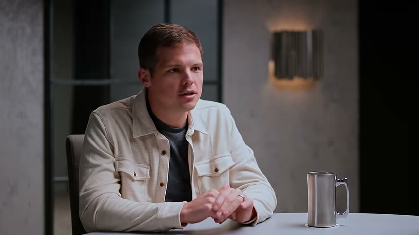
10:10 · 부업의 왕은 어디서 나온 건가요?46초
이 단계의 질문은 모두 사람과 사실에 대한 질문입니다. 누구인지, 어떻게 알려졌는지, 몇 개나 시작했는지, 결과는 어땠는지입니다. 시청자는 이 단계에서 크리스가 어떤 사람인지를 알게 되고, 크리스는 부담 없는 질문에 답하며 대화에 자리를 잡습니다. 이 단계가 있어서 뒤의 판단 기준, 실패한 경험 같은 개인적인 질문이 자연스럽게 놓입니다.
2단계 사고방식 추출: 경쟁, 모방, 실행, 경험
챕터 3 끝에서 7까지(7:48~30:27)입니다. 스티븐은 마인드셋을 먼저 묻고(전술에 들어가기 전에요), 챕터 4에서 지금이 시작하기 좋은 때냐고 묻고, 사람들이 왜 안 하는지 묻고, 제로섬이라는 단어를 짚습니다. 챕터 5에서는 모방 전략을 직접 해보셨느냐고 묻고, 챕터 6에서는 오래된 문제와 새로운 문제라는 자기 틀을 내놓고, 챕터 7에서는 버키스 이야기에서 가져갈 수 있는 것을 묻습니다. 앞의 복기 1~4가 모두 이 단계에 있습니다. 경쟁을 어떻게 보는지, 모방을 어떻게 쓰는지, 실행과 경험이 어떻게 쌓이는지가 질문의 중심입니다.
3단계 판단 기준 추출: 위험, 열정, 검증, 집중
챕터 8에서 18까지(30:27~1:07:10)입니다. 창업하면 안 되는 사람을 떠올려 보라는 질문(챕터 8), 플랜 B가 중요하냐는 질문(챕터 9), 이 방정식에서 열정은 얼마나 중요한가요(챕터 11), 검증이 무슨 뜻이냐는 질문(챕터 13), 집중 이야기(챕터 18)가 이어집니다. 위험, 열정, 검증, 집중이라는 네 가지가 모두 크리스가 어떤 기준으로 판단하는지를 묻는 질문들입니다. 이 단계에서 스티븐은 반대 사례(챕터 18)와 구체적 인물(챕터 8)이라는 두 가지 도구를 번갈아 씁니다.
4단계 실제 기술 추출: 광고, 영업, 파트너십
챕터 14에서 21까지(52:05~1:15:15 앞)입니다. 챕터 14와 15의 광고, 챕터 20의 거절과 영업, 챕터 21의 사업 파트너와 지분이 이 단계입니다. 페이스북 광고 이야기에서는 스티븐이 "모두가 갖춰야 할 기술이라고 보세요?"라고 묻고, 챕터 20에서는 "거절과 실패와의 새로운 관계가 생기셨나요?"라고 묻고, 챕터 21에서는 "사업 파트너가 필요한가요? 필요하다면 누구를, 어떻게, 무엇을?"이라고 묻습니다. 앞에서 사고방식과 기준을 들은 뒤라서, 기술 이야기도 그냥 방법 나열이 아니라 그 사람의 생각이 만든 방법으로 들립니다.
5단계 실전 시뮬레이션: 500달러, 1,000달러, 5,000달러
챕터 22에서 28까지(1:15:15~1:49:11)입니다. 이 단계의 시작에서 스티븐은 가방을 꺼냅니다.
스티븐: 앞에 가방 세 개에 각기 다른 금액이 있어요. 그 금액을 드린다면 어떤 사업을 시작하시겠어요? 그것만 알려주세요. — 크리스: 좋아요. 첫 번째에는 500달러가 있네요. — 스티븐: 네. — 크리스: 대부분은 이걸 보고 500달러로 뭘 하지? 하겠죠. 큰돈이에요. 요즘 같은 시대에는 30일 무료 체험이 있고… 그래서 가장 먼저 떠오르는 것, 지금 제일 좋아하는 사업 아이디어는, 다행히 이보다 적은 돈으로도 시작할 수 있는데, 중소기업에 AI를 도입해 주는 사업이에요.
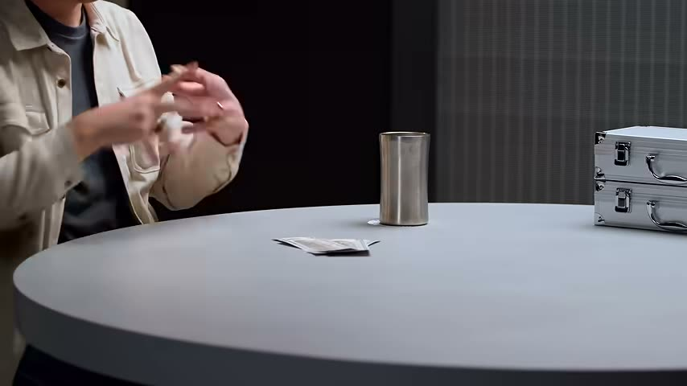
11:27 · 가방 세 개, 첫 번째는 500달러58초
이 단계에서 스티븐은 제약조건을 주고 정답 대신 순서와 결정을 끌어냅니다. 얼마를 청구하실 건가요(챕터 22), 500달러 수준에서 눈에 띄는 다른 건 없나요(챕터 23), 자판기로 돈 벌 수 있다고들 하는데 500달러로 할 수 있나요(챕터 23 끝)처럼 질문이 구체적입니다. 크리스가 낯선 용어를 쓸 때마다 시청자의 눈높이에서 멈추는 질문도 나옵니다. 바이브 코딩이 뭔지 모르는 분들께 설명해 주세요(챕터 22), 디스플레이 광고가 뭔가요(챕터 23), RV 파크가 뭐죠, 판매자 금융이 무슨 뜻인가요(챕터 28)가 그렇습니다. 앞 단계의 원리가 실제 돈과 시간 안에서 어떻게 쓰이는지 보여 주는 단계입니다.
6단계 경험의 압축: 성공과 실패의 공통점, 피해야 할 기회
챕터 29에서 33까지(1:49:11~2:00:37 앞)입니다. 챕터 30의 질문이 복기 10에서 본 가장 수익성 높았던 사업과 가장 쉬웠던 사업입니다. 같은 챕터 끝에서 스티븐은 이걸 시작했으면 좋았을 텐데 싶었던 부업은 없냐고 묻습니다. 챕터 33에서는 크리스가 신기루 기회라는 말을 꺼내자 스티븐이 자기가 계속 들어 온 그룹용 앱 피치를 예로 듭니다. 크리스는 신기루죠, 하고 받고, 스티븐은 "신기루 기회라고 하셨을 때 특별히 떠오른 게 있으세요?"라고 다시 묻습니다. 사업 수십 개의 경험이 한 문장의 기준, 곧 피해야 할 기회의 모양으로 압축되는 대목입니다.
7단계 철학적 질문: 사업가로 산다는 것은 무엇인가
챕터 34에서 35까지(2:00:37~2:08:21 앞)입니다. 스티븐은 이렇게 묻습니다. "우리가 얘기 안 했지만 얘기해야 했던 게 있을까요, 크리스?" 크리스는 창업에 자유가 있다고 믿지만 오히려 9 to 5보다 더 감옥인 경우가 많다고 답합니다. 대화는 자유와 독립이라는 목표로 옮겨 가고, 스티븐은 이렇게 말하고 묻습니다.
스티븐: 한 세대가 독립이라는 아이디어를 팔렸다고 생각해요. 그게 우리를 어디로도 데려다주지 않았다고 생각하고요. … 당신의 삶을 보면 아이 넷, 많은 책임, 직원, 사업이 있고, 의존할 게 정말 많아요. 아마 그게 당신이 가진 행복의 대부분의 원천이겠죠. — 크리스: 네, 맞아요. 올해 제 인생의 명언은 해결책은 없고 트레이드오프만 있다예요. 창업은 해결책이 아니에요. 뭔가와 맞바꾸는 거죠. 문제는 그 트레이드오프가 가치가 있는가 아닌가이고, 해보기 전에는 알 수 없어요. — 스티븐: 당신이 하고 있는 트레이드오프는 뭐죠? — 크리스: 안정성, 변동성의 부재, 예측 가능성이요…
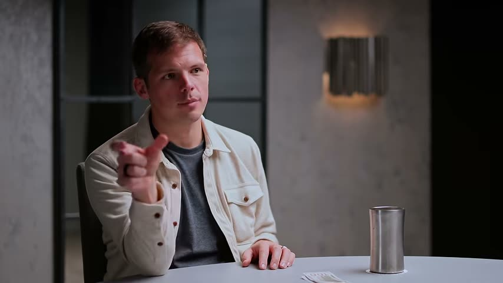
12:09 · 독립이라는 아이디어 → 당신이 하고 있는 트레이드오프는 뭐죠?1분 3초
마지막 단계의 질문은 사업 이야기가 아닌 창업가로 산다는 것의 값이 무엇이냐에 관한 것입니다. 앞의 여섯 단계에서 쌓인 사례와 기준이 이 질문의 밑바탕이 됩니다. 스티븐은 자기 생각을 먼저 내놓고(한 세대가 독립을 팔렸다고 생각해요) 크리스가 거기에 자기 문장으로 답하게 합니다. 해결책은 없고 트레이드오프만 있다는 크리스의 말은 이 질문에서 나왔고, 인터뷰 전체의 결론처럼 읽히는 문장입니다.
메타분석: 스티븐의 질문은 중립적일까
여기까지는 스티븐의 질문이 정보를 끌어내는 방식에 집중했습니다. 하지만 스티븐의 모든 질문이 중립적인 것은 아닙니다. 기획 메모는 자신의 가설에 동의를 구하는 질문도 있고, 특정 도구에 대한 투자 이해관계를 밝히는 장면도 있다고 짚습니다. 질문은 정보를 끌어내기도 하지만 답변의 방향을 제한하기도 합니다. 이 절은 그 두 가지를 대본에서 실제로 찾은 사례와, 대본에서 확인한 것이 아닌 일반적인 주의로 나누어 씁니다.
먼저 대본에서 확인한 사례입니다. 하나는 스티븐이 자기 방식을 먼저 말하고 크리스에게 비슷한지 묻는 장면입니다. 챕터 12(47:10)입니다.
스티븐: 저는 일요일 선반이 있어요. 먼데이 보드에 있는 디지털 보드인데, 밤 11시에 꽂히는 아이디어가 있을 때 바로 실행하려 하지 않고 거기에 올려둬요. … 그 계곡에서 빠져나올 수 있다면, 뭔가 나를 그 계곡에서 끌어올려 준다면, 추구할 가치가 있다고 봅니다. — 크리스: 좋은 관점이에요. 절망의 계곡이라고 하죠. — 스티븐: 맞아요. 당신도 비슷한 경로를 따르나요? — 크리스: 제 프레임워크는, 아이디어가 있으면 2주 뒤에도 여전히 그걸 생각하고 있는가입니다. 왜인지 모르지만 제 타임라인은 2주예요.
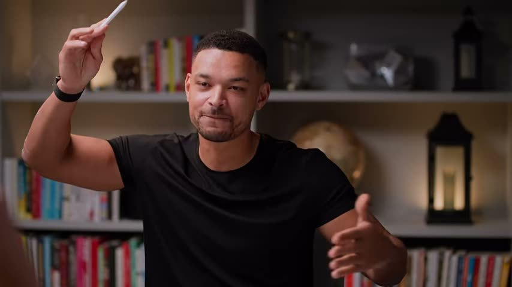
10:54 · 일요일 선반 → 당신도 비슷한 경로를 따르나요?1분 10초
스티븐은 자기 가설을 질문의 틀로 먼저 내놓았고, 크리스는 좋은 관점이라고 받아 줍니다. 이런 질문은 상대가 내 틀 안에서 답하기 쉽게 만듭니다. 그런데 이 장면에는 반대 방향의 신호도 있습니다. 크리스는 비슷한 경로를 따르느냐는 질문에 제 프레임워크는, 하고 자기 틀인 2주 기준을 꺼냅니다. 내 틀에 동의하는 대신 자기 방식을 말해 준 것입니다. 가설을 내놓는 질문이 늘 답을 가두는 것은 아니고, 상대가 가설 밖으로 나갈 문이 열려 있는지가 중요하다는 것을 보여 주는 사례로 읽힙니다.
둘째는 결론을 먼저 문장으로 만들어 확인을 구하는 질문입니다. 복기 5의 장면에서 이미 나왔습니다. 스티븐은 "그럼 위험 대비 보상으로 볼 때 이 경우엔 보상이 위험을 상쇄하지 못한다고 보시는군요."라고 말하고 크리스는 네, 하고 받습니다. 이어서 "사고방식에 어떤 결함이 보인다는 뜻 같은데요."라고 말하고, 크리스는 역시 네, 하고 받습니다.
스티븐: 그럼 위험 대비 보상으로 볼 때 이 경우엔 보상이 위험을 상쇄하지 못한다고 보시는군요. — 크리스: 네. 사람들이 저한테 와서 직장을 그만두라고 격려해 주길 바라거든요. 사실상 간청하지 않으면서 간청하는 거죠. 저는 그러고 싶지 않아요.
스티븐: 그의 생각에 약간의 결함이 있다고 보세요? 가족을 위한 안정에 대한 그의 믿음이 사실인데도 여전히 그가 해야 한다고 보시는 건, 사고방식에 어떤 결함이 보인다는 뜻 같은데요. — 크리스: 네. 직장을 그만둘 필요가 없으니까요. 밤과 주말에 할 시간은 충분해요.
이 두 질문은 질문의 모양을 한 요약이자 해석입니다. 상대가 네 한마디로 답하기 쉽고, 그 한마디가 스티븐의 문장을 크리스의 입장처럼 만들어 줍니다. 그러면서도 이 장면이 유용했던 이유는, 요약이 크리스의 말에서 크게 벗어나지 않았고, 크리스가 곧 이어서 자기 말을 덧붙였기 때문입니다. 요약을 먼저 내놓는 질문은 이해를 확인하는 도구가 되기도 하고 답을 몰아가는 도구가 되기도 합니다. 크리스 본인이 마지막에 이런 말을 합니다. 스티븐의 질문들이 한 가지 방식으로 보고 있던 것들을 완전히 다른 방식으로 보게 해줬고, 그 덕에 자기 이야기에 대해 더 배우게 됐다는 것입니다. 질문이 방향을 만든다는 말의 긍정적인 쪽입니다.
셋째는 이해관계를 밝히는 대목입니다. 챕터 22(1:15:15)에서 크리스가 AI 도구를 배우는 데 쓸 도구들을 말한 직후입니다.
스티븐: 바이브 코딩이 뭔지 모르는 분들께 설명해 주세요. — 크리스: 바이브 코딩은 비기술자, 저 같은 코딩 못하는 사람이 자연어를 써서 강아지 훈련사를 위한 고객 관리 앱을 만들어줘라고 말하는 거예요. 그러면 앱이 생기죠… — 스티븐: 이 사실을 모르는 분들을 위해 말씀드리면, 저는 러버블(Lovable)과 리플릿(Replit) 둘 다에 투자자입니다. 이해관계를 밝혀둘게요. 하지만 리플릿이나 러버블에 가서 갖고 있는 웹사이트 아이디어를 아무거나 입력해서, 눈앞에서 그게 만들어지는 걸 보며 유레카를 겪어보시길 권해요.
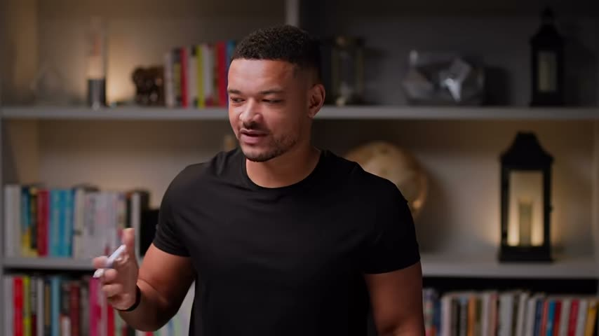
11:29 · 바이브 코딩이 뭔가요 → 두 곳 모두에 투자자입니다44초
여기서는 스티븐이 도구에 대한 이해관계를 직접 밝힙니다. 그것도 크리스가 그 도구들을 말한 직후 시청자가 설명을 들은 바로 뒤에 말합니다. 공개했다는 사실은 대본에서 확인됩니다. 다만 이 장면은 공개가 있었기에 시청자가 알고 들을 수 있었다는 점이 핵심이고, 공개 이후에도 직접 써 보라고 권하는 문장이 붙어 있는 점은 시청자가 스스로 구분해서 들어야 할 부분입니다. 이 이상 질문의 중립성에 대해 대본이 알려 주는 것은 없습니다.
또 하나, 챕터 34 끝부분(2:00:37 이후)에서 스티븐은 한 세대가 독립이라는 아이디어를 팔렸다고 생각한다는 자기 주장을 내놓고, 챕터 35(2:03:44)에서는 크리스의 개인적 경험과 불안, 성장 환경이 위험을 감수하게 만들었을 것이라는 자기 해석을 길게 말합니다. 크리스는 두 번 모두 맞아요, 하고 받습니다. 이것이 질문의 방향을 제한한 것인지, 대화가 깊어진 것인지는 대본만으로 판단할 수 없으니 여러분이 영상을 보고 판단해 보세요.
이 기술을 쓸 때 주의
다음은 대본에서 확인한 것이 아니라 이 교재의 일반적인 정리입니다. 내가 가설을 내놓고 동의를 구하는 질문을 하면 상대는 그 틀 안에서 답하기 쉬워집니다. 그러니 가설을 말하더라도 내 가설과 다른 답이 나올 수 있다는 것을 열어 두고, 상대가 자기 말로 답할 자리를 남겨야 합니다. 상대의 말을 내 말로 정리해 확인할 때도 정리가 결론을 앞질러 버리지 않는지 살펴야 합니다.
이해관계가 있으면 밝히는 것이 맞고, 밝혔다고 해서 질문이 중립이 되는 것은 아닙니다. 그리고 질문은 상대가 어떤 대답을 하도록 이끄는 힘이 있다는 것을, 내가 질문하는 쪽일 때만이 아니라 질문을 받는 쪽일 때도 기억해야 합니다. 스티븐의 질문에서 배우되 스티븐의 질문을 정답으로 받아들이지는 말라는 것이 이 메타분석의 결론입니다.
CHAPTER 06
복기 12: 대장님을 뵐 때 나는 어떻게 질문하는가
스티븐을 분해했으니 이제 나를 분해한다
마지막 장입니다. 가장 깊게 돌아볼 부분이기도 합니다. 앞의 장들이 스티븐의 질문을 분해한 것이라면, 이 장은 대장님을 뵐 때의 나를 분해합니다.
같은 한 시간을 대화해도 무엇을 알아듣고 어떤 질문을 잇느냐에 따라 얻는 정보의 깊이와 양이 완전히 달라집니다. 이 인터뷰가 보여 준 가장 큰 교훈이 바로 그것입니다.
홈쇼핑 이야기를 스티븐 방식으로 이어 가면
안내 자료가 든 예시입니다. 지난 BMW에서 대장님이 홈쇼핑을 보라고 말씀하셨고, 남들이 이미 연구해 놓은 글씨체, 색상, 크기 같은 것을 공부할 수 있다고도 하셨습니다. 이 말씀을 스티븐 방식으로 이어 간다면 이런 질문들이 나올 수 있습니다.
관찰 대상 파악: 대장님께서는 홈쇼핑을 보실 때 무엇부터 보십니까?
실제 사례 확인: 홈쇼핑에서 발견한 기술을 실제 사업에 적용하신 사례가 있으십니까?
판단 기준 확인: 어떤 부분이 실제로 고객에게 먹히는 기술인지 어떻게 판단하십니까?
자신의 가설 제시: 제가 직접 분석해 보니 이런 순서로 설득하는 것 같은데, 제가 놓친 부분이 있을까요?
적용 범위 확인: 이 구조가 고관여 B2B 영업에서도 동일하게 적용될까요?
반대 사례 확인: 반대로 이런 방식을 사용하면 오히려 역효과가 나는 상황도 있을까요?
각 질문은 앞의 장면과 이어집니다. 관찰 대상 파악은 상대의 말을 눈에 보이는 행동으로 바꾸는 복기 6과, 실제 사례 확인은 주장을 경험으로 바꾸는 복기 2와 닿아 있습니다. 판단 기준 확인은 복기 5, 자신의 가설 제시는 복기 3, 적용 범위 확인은 복기 4와 8에서 본 조건을 묻는 질문, 반대 사례 확인은 복기 8과 같은 뿌리입니다.
외우지 말고, 먼저 공부하고, 듣고, 그 순간 궁금한 것을 묻는다
중요한 것은 이 질문들을 외워서 던지는 것이 아닙니다. 내가 먼저 충분히 공부하고, 상대의 답변을 충실히 듣고, 그 순간 궁금해진 것을 물을 수 있어야 합니다. 그래야 이미 말씀해 주신 것을 되묻는 일도 피할 수 있습니다.
스티븐의 질문도 그가 가진 지식과 경험에서 나옵니다. 월마트 이야기, 플랜 B 연구, 자기가 투자한 회사 60~70개 같은 것이 질문 안에 들어 있었습니다. 준비한 만큼, 들은 만큼 물을 수 있다는 것이 이 인터뷰의 가장 단순한 결론입니다.
스스로 돌아볼 세 장면
이 부분은 직접 음성으로 복기하는 자리이므로 교재에는 답을 쓰지 않고 질문만 둡니다. 대장님을 뵈었던 시간을 떠올리며 하나씩 답해 보세요.
대장님이 엄청난 정보를 주셨는데도 중요한 단어를 포착하지 못했던 순간은 언제였나요? 그때 어떤 단어가 지나갔을까요?
더 깊게 물을 수 있었는데 그냥 넘어간 순간은 언제였나요? 그때 스티븐이라면 무엇을 물었을까요?
내가 준비해 간 이야기를 하느라 상대의 말을 충분히 듣지 못한 순간은 언제였나요?
연습 문제 1: 땀 흘리는 못생긴 소득
챕터 10 열정은 얼마나 중요할까요?(39:10)입니다. 크리스가 패시브 인컴을 노력을 계속 쏟지 않아도 받는 소득이라고 정의한 뒤, 특히 초반에는 찾기가 아주 어렵다고 말합니다. 그러니 땀 흘리는 소득, 못생긴 소득, 어떤 수단이든 동원해서 능동적 소득을 만들 수 있어야 하고, 그걸 더 많이 더 오래 할수록 진짜 패시브 인컴이 더 현실적이 된다는 것입니다. 스티븐이라면 무엇을 물을까요? 여기서 멈추고 내 질문을 먼저 말해 보세요.
스티븐: 땀 흘리는 못생긴 소득이요. — 크리스: 네. — 스티븐: 지금 이걸 듣는 누구나 만들 수 있는 땀 흘리는 못생긴 소득의 예를 하나 들어주세요. 패시브하고 땀 흘리는 소득으로 이어진, 눈에 안 띄는 사업 중 가장 좋아하는 예가 뭔가요? — 크리스: 제가 시작한 대부분이 그랬어요. 컨시어지 자동차 구매 사업을 한 적이 있어요. — 스티븐: 컨시어지 자동차 구매 사업이요? 그게 뭐죠? — 크리스: 전통적인 중고차 딜러를 떠올려 보세요. 딜러 허가증을 따면 법적으로 경매장에 가서 도매가로 차를 사고, 매장에 올려놓고 팔 수 있어요…
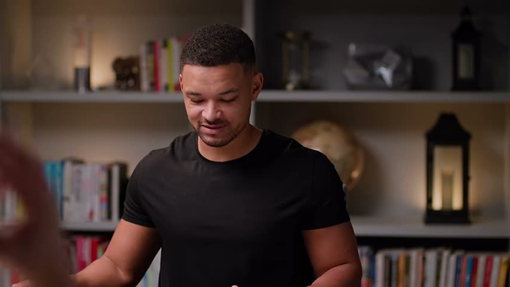
10:46 · 땀 흘리는 못생긴 소득이요 → 예를 하나 → 컨시어지 자동차 구매56초
스티븐의 첫 반응은 질문이 아닙니다. 크리스의 말을 그대로 따라 합니다. 땀 흘리는 못생긴 소득이요. 이 한 줄은 이 표현을 붙잡았다는 신호이자 크리스가 이 표현을 어떤 뜻으로 쓰는지 한 번 더 말하게 하는 자리를 만듭니다. 다음 질문은 포인트 2번의 전형입니다. 개념을 듣고 끝내지 않고 하나의 예를 요구합니다. 지금 이걸 듣는 누구나 만들 수 있는 이라는 단서가 붙은 것은, 시청자가 실제로 따라 할 수 있는 예를 바란다는 뜻으로 읽힙니다.
크리스가 컨시어지 자동차 구매 사업이라고 답하자 스티븐은 한 번 더 단어를 잡습니다. 그게 뭐죠? 이 질문은 복기 1에서 본 제로섬 장면과 같은 모양입니다. 새로운 단어가 나오면 넘어가지 않고 정의를 듣습니다. 이 장면의 결과도 눈여겨볼 만합니다. 크리스는 이 사업을 경매장에서 사 온 차가 길가에서 고장 나는 일, 뙤약볕 아스팔트 위의 일이었다며 열정이 아니었다고 말합니다. 바로 다음 챕터는 스티븐의 열정은 얼마나 중요한가요, 라는 질문으로 시작합니다. 앞 답변이 다음 질문을 낳는 5번의 연결선이 여기서도 확인됩니다.
연습 문제 2: 열정을 무시하라는 말
챕터 11 아이디어를 계속 추진해야 할지 아는 법(41:55)입니다. 스티븐이 성공하려면 그 일을 사랑하는 것이 얼마나 중요하냐고 묻자, 크리스는 이익을 따라가라고, 열정을 따라갈 여유가 생길 때까지는 열정을 무시하라고 답합니다. 내가 사랑하는 것과 돈이 되는 것이 처음부터 겹칠 확률은 통계적으로 거의 0이라는 이유입니다. 스티븐이라면 이 답에서 어떤 단어를 잡아 무엇을 물을까요? 여기서 멈추고 내 질문을 먼저 말해 보세요.
스티븐: 끈기는요? — 크리스: 끈기는 문제를 이해하고 더 많이 배우게 해주는 반복을 만들어 주죠. — 스티븐: 열정과 끈기는 불가분해 보여요. 더 열정을 가진 일은 보상이 안 나와도 계속할 가능성이 높으니까요. — 크리스: 제 자동차 사업이 그랬죠. 차에 열정이 없었고 다른 잘되는 사업이 있었으니 그걸 버렸어요. 그리고 사람들은 가끔 스스로를 게으르다거나 열심히 안 한다고 봐요…
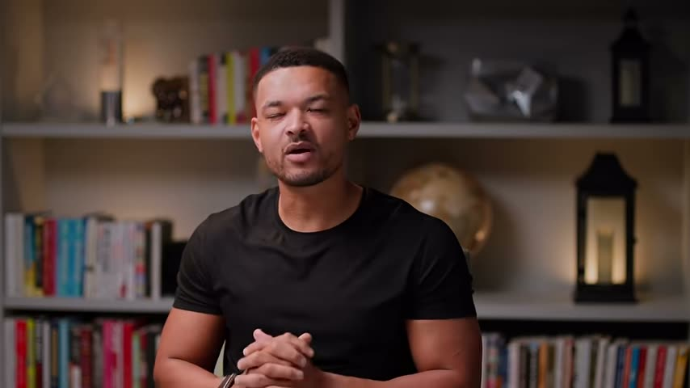
10:49 · 열정은 무시하세요 → 끈기는요? → 열정과 끈기는 불가분해 보여요51초
스티븐이 고른 단어는 끈기입니다. 크리스의 열정 이야기에는 끈기라는 단어가 한 번도 나오지 않았는데, 스티븐은 열정과 짝을 이루는 개념을 하나 더 가져와 크리스의 입장을 다른 각도에서 봅니다. 끈기는요, 라는 짧은 질문으로 크리스에게 새 답을 요구합니다.
그다음 스티븐은 자기 가설을 내놓습니다. 열정과 끈기는 불가분해 보여요. 이것은 질문이라기보다 두 개념을 하나로 묶은 한 문장짜리 가설이고, 3번 기존 지식 활용의 모양입니다. 또 열정은 무시하라는 크리스의 말과 부딪히는 방향의 가설이기도 해서, 4번 모순 사례의 약한 형태로도 볼 수 있습니다. 크리스는 이 가설에 반박하지 않고 앞에서 말한 자동차 사업으로 돌아가 답합니다. 차에 열정이 없었고 다른 잘되는 사업이 있었으니 버렸다는 것입니다. 연습 문제 1에서 나온 사례를 이 가설의 증거로 다시 쓴 셈입니다. 내 질문이 나올 때 앞에서 나온 사례를 기억하고 있으면, 대화가 한 겹 더 두꺼워진다는 것을 보여 주는 장면입니다.
마치며
이 교재의 장면 열 개를 한 줄씩 줄이면 이렇습니다. 상대가 쓴 단어의 뜻을 확인한다. 주장을 경험과 행동 단위로 쪼갠다. 내 가설을 내놓고 고친다. 사례에서 원리를 뽑는다. 구체적인 대상으로 기준을 묻는다. 개념을 관찰 가능한 행동으로 바꾸고 내 말로 확인한다. 상황과 제약조건을 던진다. 반대 사례로 주장의 경계를 시험한다. 답변 속 더 근본적인 문제로 내려간다. 준비한 질문보다 방금 나온 답변을 따라간다.
이 열 가지는 모두 하나의 습관 위에 서 있습니다. 상대가 방금 한 말을 정확히 듣는 것입니다. 그리고 그 말을 재료로 삼으려면 내가 미리 공부해서 아는 것이 있어야 합니다. 대장님을 다시 뵐 때 열 가지를 한꺼번에 쓰려고 하지 마시고, 먼저 하나만 정해 보시기 바랍니다. 어느 단어를 잡을지는 그 순간 대장님의 말씀 안에 있을 것입니다.